<title>5520 Toscana</title>
<meta name="claude:viewport-fit-sides" content="cover">
<link rel="preconnect" href="https://fonts.googleapis.com">
<link rel="preconnect" href="https://fonts.gstatic.com" crossorigin>
<link rel="stylesheet" href="https://fonts.googleapis.com/css2?family=Young+Serif&family=Instrument+Sans:wght@400;500;600&family=Newsreader:ital,opsz,wght@1,6..72,400&display=swap">
<style>
/* Layout: one continuous scroll of plant-colored chapters. Photos run off the left edge; a growing stem holds the right rail. */
@property --now { syntax: "<color>"; inherits: true; initial-value: #FBFBF5; }
@property --on  { syntax: "<color>"; inherits: true; initial-value: #17251D; }
:root {
  --paper: #FBFBF5;
  --ink: #17251D;
  --forsythia: #F2E7C2;
  --gaura: #F4C3CF;
  --oak: #1D3A2B;
  --leaf: #C8DBBF;
  --stucco: #A3CBD2;
  --salvia: #EC8068;
  --mist: #EEF3E6;
  --display: "Young Serif", Georgia, "Times New Roman", serif;
  --body: "Instrument Sans", "Helvetica Neue", Arial, sans-serif;
  --latin: "Newsreader", Georgia, serif;
  --gut: clamp(22px, 5.5vw, 80px);
  --rail: 0px;
  --bar: 60px;
  --now: var(--paper);
  --on: var(--ink);
  color-scheme: light;
}
@media (min-width: 1100px) { :root { --rail: 176px; } }
html { scroll-behavior: smooth; scroll-padding-top: var(--bar); }
body {
  margin: 0; background: var(--now); color: var(--on);
  font: 400 1.125rem/1.6 var(--body); overflow-x: clip;
  transition: --now .8s ease, --on .8s ease;
  -webkit-font-smoothing: antialiased;
}
body::before { content: ""; position: fixed; inset: 0 0 auto; height: env(safe-area-inset-top, 0px); z-index: 10; background: var(--now); }
body:has(.bar.dark)::before { background: var(--ink); }
a { color: inherit; }
:focus-visible { outline: 2px solid currentColor; outline-offset: 3px; }
h1, h2, h3 { font-family: var(--display); font-weight: 400; margin: 0; text-wrap: balance; }
h1 { font-size: clamp(3.5rem, 11vw, 12.5rem); line-height: .96; letter-spacing: -.02em; }
h2 { font-size: clamp(2.75rem, 7.6vw, 8rem); line-height: 1; letter-spacing: -.015em; }
h3 { font-size: clamp(1.6rem, 2.6vw, 2.5rem); line-height: 1.1; }
p { margin: 0; }
.lede { font-size: clamp(1.25rem, 1.9vw, 1.75rem); line-height: 1.4; max-width: 34em; }
.copy { max-width: 36em; display: grid; gap: 1em; }
.label { font-size: .8rem; font-weight: 500; letter-spacing: .06em; text-transform: uppercase; }
.latin { font-family: var(--latin); font-style: italic; font-size: 1.15em; }
.todo { background: color-mix(in srgb, currentColor 11%, transparent); padding: .1em .4em; border-radius: 3px; font-size: .92em; }

/* Bar */
.bar {
  position: sticky; top: env(safe-area-inset-top, 0px); z-index: 20; height: var(--bar);
  display: flex; align-items: center; justify-content: space-between; background: var(--now);
  padding-left: max(var(--gut), env(safe-area-inset-left, 0px));
  padding-right: max(var(--gut), env(safe-area-inset-right, 0px));
}
.bar { transition: background-color .35s ease, color .35s ease; }
.bar.dark { background: var(--ink); color: var(--paper); }
.bar-links { display: flex; align-items: center; gap: clamp(14px, 2.4vw, 28px); }
.menu-btn { appearance: none; display: grid; place-items: center; width: 44px; height: 44px; margin-right: -10px; padding: 0; border: 0; border-radius: 50%; background: transparent; color: inherit; cursor: pointer; }
.menu-btn .i-close, .menu-btn.open .i-open { display: none; }
.menu-btn.open .i-close { display: block; }
.mnav { position: fixed; z-index: 19; left: 0; right: 0; top: calc(env(safe-area-inset-top, 0px) + var(--bar)); max-height: calc(100vh - var(--bar)); max-height: calc(100svh - var(--bar)); overflow-y: auto; background: var(--now); box-shadow: 0 18px 30px -18px rgba(23, 37, 29, .45); padding-left: max(var(--gut), env(safe-area-inset-left, 0px)); padding-right: max(var(--gut), env(safe-area-inset-right, 0px)); padding-block: 8px 24px; }
.mnav ul { list-style: none; margin: 0; padding: 0; }
.mnav a { display: block; padding: 12px 0; font-family: var(--display); font-size: 1.6rem; line-height: 1.2; text-decoration: none; border-top: 1px solid color-mix(in srgb, var(--on) 16%, transparent); }
.mnav li:first-child a { border-top: 0; }
.mnav a[aria-current] { text-decoration: underline; text-underline-offset: 6px; }
@media (min-width: 1100px) { .menu-btn, .mnav { display: none !important; } }
@media (max-width: 599px) { .bar-details { display: none; } }
.mark { font-family: var(--display); font-size: 1.2rem; text-decoration: none; }
.go { font-size: .95rem; font-weight: 600; text-underline-offset: 4px; }

/* Stem navigation */
.stem { display: none; }
@media (min-width: 1100px) {
  .stem { display: block; position: fixed; z-index: 15; right: 0; top: calc(50% + 30px); transform: translateY(-50%); width: var(--rail); }
  .stem ol { list-style: none; margin: 0; padding: 0; display: grid; gap: 12px; position: relative; }
  .stem ol::before, .stem ol::after { content: ""; position: absolute; left: 30px; top: 14px; bottom: 14px; width: 1.5px; background: currentColor; opacity: .25; transform-origin: top; }
  .stem ol::after { opacity: 1; transform: scaleY(var(--grown, 0)); }
  .stem li { position: relative; }
  .stem a { position: relative; display: flex; align-items: center; min-height: 28px; padding-left: 52px; font-size: .85rem; font-weight: 500; line-height: 1.2; text-decoration: none; opacity: .78; transition: opacity .2s; }
  .stem a:hover, .stem a:focus-visible, .stem a.here { opacity: 1; }
  .stem a.here { font-weight: 700; }
  .stem a:hover span, .stem a:focus-visible span { text-decoration: underline; text-underline-offset: 3px; }
  /* Each leaf's pointed base sits on the stem, centred on its label; leaves alternate sides. */
  .stem a::before { content: ""; position: absolute; left: 31px; top: calc(50% - 7px); width: 14px; height: 14px; box-sizing: border-box; background: var(--now); border: 1.5px solid currentColor; border-radius: 100% 0 100% 0; transition: background .3s; }
  .stem li:nth-child(odd) a::before { left: 16px; border-radius: 0 100% 0 100%; }
  .stem a.past::before { background: currentColor; }
  .stem a.home::before { display: none; }
  .stem .bloom { position: absolute; left: 13px; top: 50%; width: 34px; height: 34px; z-index: 1; transform: translateY(-50%); pointer-events: none; }
}

/* Bands */
main { padding-right: var(--rail); overflow-x: clip; }
.wrap { padding-left: max(var(--gut), env(safe-area-inset-left, 0px)); padding-right: max(var(--gut), env(safe-area-inset-right, 0px)); }
.band { position: relative; padding-block: clamp(77px, 12vw, 184px); display: grid; grid-template-columns: minmax(0, 1fr); gap: clamp(56px, 8vw, 128px); }
.head { display: grid; grid-template-columns: minmax(0, 1fr); gap: clamp(20px, 2.6vw, 40px); }
.reach > div { min-width: 0; }

/* Photo placeholders: swap .shot for  */
.ph { position: relative; margin: 0; overflow: hidden; background: color-mix(in srgb, var(--on) 9%, var(--now)); max-width: 100%; }
.shot { position: absolute; left: 0; width: 100%; top: -9%; height: 118%; object-fit: cover; background: linear-gradient(180deg, color-mix(in srgb, var(--on) 5%, transparent), color-mix(in srgb, var(--on) 17%, transparent)); will-change: transform; }
.ph.still .shot { top: 0; height: 100%; }
.pos-curb { object-position: 22% 60%; }
@media (max-width: 760px) {
  .pos-curb { object-position: 40% 60%; }
  .fit-m .shot { top: 0; height: 100%; transform: none !important; }
}
.ph figcaption { position: absolute; left: 16px; right: 16px; bottom: 14px; font-size: .9rem; line-height: 1.35; }
.ph figcaption b { font-weight: 600; margin-right: .5em; }
.r169 { aspect-ratio: 16/9; } .r32 { aspect-ratio: 3/2; } .r45 { aspect-ratio: 4/5; } .r11 { aspect-ratio: 1; } .r219 { aspect-ratio: 21/10; }
@media (max-width: 640px) { .r219, .r169 { aspect-ratio: 4/3; } }

/* Specimens */
/* Each plant paints once on its own layer and opts out of the page-color fade, so scrolling stays smooth. */
.specimen { display: block; width: 100%; height: auto; overflow: visible; will-change: transform; --now: #000; --on: #000; color: var(--ink); }
[data-tone="oak"] .specimen { color: #F4F6EA; }
.specimen .line path { fill: none; stroke: currentColor; stroke-opacity: .68; stroke-width: var(--sw, 1.8); stroke-linecap: round; stroke-linejoin: round; }
.armed .line { opacity: 0; }
.armed .line path { stroke-dasharray: 1; stroke-dashoffset: 1; }
.armed .wash { opacity: 0; }
.armed.grown .line { opacity: 1; }
.armed.grown .line path { stroke-dashoffset: 0; transition: stroke-dashoffset 1.5s cubic-bezier(.4,.1,.2,1) calc(var(--i) * 9ms); }
.armed.grown .wash { opacity: 1; transition: opacity 1s ease .7s; }
.float { position: absolute; z-index: 3; pointer-events: none; will-change: transform; }

/* Hero */
.hero-type { padding-top: clamp(40px, 7vw, 110px); padding-bottom: clamp(36px, 5vw, 72px); display: grid; gap: 22px; }
/* The address scales with the space it has, so it always sits on one line. */
.hero-type { container-type: inline-size; }
.hero-type h1 { white-space: nowrap; font-size: 9vw; font-size: min(11cqi, 12.5rem); }
.status-row { display: flex; align-items: flex-end; justify-content: space-between; gap: 16px; }
.status-meta { display: flex; flex-wrap: wrap; align-items: center; gap: 10px 16px; min-width: 0; }
.badge { justify-self: start; display: inline-block; padding: 7px 16px 6px; border-radius: 999px; background: #2F7C89; color: #FFFFFF; font-size: .85rem; font-weight: 600; letter-spacing: .06em; text-transform: uppercase; }
.stage { position: relative; }
.hero-salvia { flex: 0 0 auto; width: clamp(84px, 14vw, 230px); margin-bottom: -.35em; pointer-events: none; }
.say { font-family: var(--display); font-size: clamp(1.7rem, 3.9vw, 4rem); line-height: 1.16; max-width: 21em; text-wrap: pretty; }
.say em { font-style: normal; background: linear-gradient(transparent 62%, var(--forsythia) 62%); }

/* Modular grid */
.grid { display: grid; grid-template-columns: repeat(12, minmax(0, 1fr)); gap: clamp(12px, 1.6vw, 24px); align-items: end; }
.c8 { grid-column: span 8; } .c7 { grid-column: span 7; } .c5 { grid-column: span 5; } .c4 { grid-column: span 4; } .c6 { grid-column: span 6; } .c12 { grid-column: span 12; }
.visit-plant { right: 1%; bottom: 10%; width: clamp(200px, 25vw, 420px); }
@media (max-width: 900px) { .visit-plant { display: none; } }
.rest-plant { right: 1%; top: clamp(60px, 7vw, 120px); width: clamp(180px, 21vw, 360px); }
@media (max-width: 760px) { .rest-plant { display: none; } }
.arrive-art { width: min(100%, 440px); justify-self: center; align-self: center; }
.intro { padding-top: clamp(56px, 8vw, 120px); display: grid; gap: clamp(36px, 4.5vw, 64px); justify-items: start; }
.glance { display: grid; grid-template-columns: repeat(4, minmax(0, 1fr)); gap: clamp(22px, 2.6vw, 36px) clamp(16px, 2.4vw, 36px); margin: 0; width: 100%; border-top: 1.5px solid currentColor; padding-top: clamp(20px, 2vw, 28px); }
.glance > div { display: grid; gap: 4px; align-content: start; min-width: 0; }
.glance dt { font-size: .9rem; opacity: .72; }
.glance dd { margin: 0; font-family: var(--display); font-size: clamp(1.35rem, 2.3vw, 2.3rem); line-height: 1.12; }
@media (max-width: 700px) { .glance { grid-template-columns: repeat(2, minmax(0, 1fr)); } }
.plain { list-style: none; margin: 0; padding: 0; display: grid; gap: 10px; }
.more { display: inline-block; background: var(--on); color: var(--now); padding: 16px 32px; border-radius: 999px; font-weight: 600; text-decoration: none; }
.reach { margin: 0; display: flex; flex-wrap: wrap; gap: 16px clamp(32px, 5vw, 72px); }
.reach dt { font-size: .9rem; opacity: .75; }
.reach dd { margin: 0; font-family: var(--display); font-size: clamp(1.25rem, 2.2vw, 2rem); overflow-wrap: anywhere; user-select: text; }
.page-title { font-size: clamp(3rem, 9vw, 9.5rem); }
.beds { display: grid; gap: clamp(64px, 8vw, 128px); }
.bed-group { display: grid; gap: clamp(24px, 3vw, 44px); }
.bed-group h2 { font-size: clamp(2.2rem, 5vw, 5rem); }
.bed-cols { display: grid; grid-template-columns: repeat(auto-fit, minmax(min(100%, 320px), 1fr)); gap: 40px clamp(32px, 5vw, 88px); align-items: start; }
.names { list-style: none; margin: 12px 0 0; padding: 0; }
.names li { font-family: var(--display); font-size: clamp(1.2rem, 1.8vw, 1.55rem); line-height: 1.25; padding: 10px 0; border-top: 1px solid color-mix(in srgb, var(--on) 22%, transparent); }
.names small { display: block; margin-top: 2px; font: 400 .95rem/1.4 var(--body); opacity: .75; }
body.on-plants .stem { display: none; }
[hidden] { display: none !important; }
.bleed-l { padding-right: max(var(--gut), env(safe-area-inset-right, 0px)); }
@media (max-width: 760px) { .grid > * { grid-column: span 12; } }
.note { display: grid; gap: 14px; align-self: center; padding-block: clamp(8px, 2vw, 32px); }

/* Out back pinned story */
.pin { position: relative; height: 420vh; }
.pin-stage { position: sticky; top: var(--bar); height: calc(100vh - var(--bar)); height: calc(100svh - var(--bar)); overflow: hidden; }
.pin-stage .ph { position: absolute; inset: 0; opacity: 0; transition: opacity .9s ease; background: var(--oak); }
.pin-stage .ph.on { opacity: 1; }
.pin-stage .ph { pointer-events: none; }
.pin-stage .ph.on { pointer-events: auto; }
.pin-stage .ph .shot { background: linear-gradient(170deg, #3B6048, #27493A 60%, #1D3A2B); top: 0; height: 100%; }
.pin-stage .ph figcaption { left: auto; right: 16px; width: min(46%, 22em); text-align: right; color: #F4F6EA; }
.pin-copy { position: absolute; left: 0; bottom: 0; z-index: 4; background: color-mix(in srgb, #12271C 82%, transparent); color: #F4F6EA; box-sizing: border-box; width: min(100%, 37em); padding: clamp(24px, 3.4vw, 52px); padding-left: max(var(--gut), env(safe-area-inset-left, 0px)); padding-bottom: clamp(56px, 3.4vw, 52px); display: grid; }
@media (max-width: 760px) { .pin-stage .ph figcaption { top: 14px; bottom: auto; left: 16px; right: auto; width: 56%; text-align: left; } }
.pin-copy { transition: opacity .5s ease, transform .5s ease; }
.pin-copy.reveal { opacity: 0; transform: translateY(24px); pointer-events: none; }
@media (max-width: 760px) { .pin { height: 560vh; } }
.pin-copy > div { grid-area: 1 / 1; display: grid; gap: 14px; opacity: 0; transform: translateY(14px); transition: opacity .6s ease, transform .6s ease; }
.pin-copy > div.on { opacity: 1; transform: none; }
.pin-copy h2 { font-size: clamp(2.3rem, 4.8vw, 5rem); }
.pin-oak { position: absolute; z-index: 3; top: -40px; right: -30px; width: clamp(200px, 28vw, 460px); opacity: .6; pointer-events: none; color: #F4F6EA; transform: translateY(calc(var(--pp, 0) * 160px)); }

/* Garden plates */
.plates.peek { grid-template-columns: repeat(3, minmax(0, 1fr)); }
.plates.peek .plate { grid-template-rows: clamp(240px, 26vw, 400px) auto; }
@media (max-width: 760px) { .plates.peek { grid-template-columns: 1fr; } }
.plates { display: grid; grid-template-columns: repeat(auto-fit, minmax(min(100%, 340px), 1fr)); gap: clamp(64px, 7vw, 120px) clamp(32px, 5vw, 88px); }
.plate { display: grid; grid-template-rows: clamp(320px, 36vw, 520px) auto; gap: 24px; min-width: 0; }
.plate .art { min-height: 0; --sw: 1.25; }
.plate .specimen { width: 100%; height: 100%; }
.plate img.specimen { object-fit: contain; object-position: center bottom; }
.plan { margin: 0; }

/* Photo slideshow: one deck, opened at whichever photo was clicked. */
.zoomable { cursor: zoom-in; }
.zoomable:focus-visible { outline: 3px solid var(--on); outline-offset: 4px; }
html.lb-open { overflow: hidden; }
.lb { position: fixed; inset: 0; width: 100%; height: 100%; max-width: none; max-height: none; margin: 0; padding: 0; border: 0; background: #0F1A14; color: #F4F6EA; font-family: var(--body); }
.lb[open] { display: grid; grid-template-rows: auto minmax(0, 1fr) auto auto; }
.lb::backdrop { background: #0F1A14; }
.lb-top { display: flex; justify-content: space-between; align-items: center; padding: calc(12px + env(safe-area-inset-top, 0px)) max(16px, env(safe-area-inset-right, 0px)) 8px max(16px, env(safe-area-inset-left, 0px)); }
.lb-count { font-size: .95rem; font-variant-numeric: tabular-nums; }
.lb-stage { position: relative; display: flex; align-items: center; justify-content: center; min-height: 0; padding-inline: max(16px, env(safe-area-inset-left, 0px)) max(16px, env(safe-area-inset-right, 0px)); touch-action: pan-y; }
.lb-stage img { display: block; max-width: 100%; max-height: 100%; object-fit: contain; user-select: none; -webkit-user-drag: none; }
.lb-btn { appearance: none; border: 0; width: 48px; height: 48px; border-radius: 50%; display: grid; place-items: center; background: rgba(244, 246, 234, .12); color: inherit; cursor: pointer; }
.lb-btn:hover { background: rgba(244, 246, 234, .26); }
.lb-btn:focus-visible { outline: 2px solid #F4F6EA; outline-offset: 2px; }
.lb-prev, .lb-next { position: absolute; top: 50%; transform: translateY(-50%); }
.lb-prev { left: max(16px, env(safe-area-inset-left, 0px)); }
.lb-next { right: max(16px, env(safe-area-inset-right, 0px)); }
.lb-cap { margin: 0; padding: 12px 16px 0; text-align: center; font-size: .95rem; opacity: .85; min-height: 1.6em; }
.lb-thumbs { display: flex; gap: 8px; overflow-x: auto; padding: 12px max(16px, env(safe-area-inset-right, 0px)) calc(16px + env(safe-area-inset-bottom, 0px)) max(16px, env(safe-area-inset-left, 0px)); }
.lb-thumbs::before, .lb-thumbs::after { content: ""; margin: auto; }
.lb-thumbs button { flex: 0 0 auto; width: 76px; height: 50px; padding: 0; border: 2px solid transparent; border-radius: 4px; overflow: hidden; background: none; cursor: pointer; opacity: .5; }
.lb-thumbs button[aria-current="true"] { border-color: #F4F6EA; opacity: 1; }
.lb-thumbs button:focus-visible { outline: 2px solid #F4F6EA; outline-offset: 2px; }
.lb-thumbs img { display: block; width: 100%; height: 100%; object-fit: cover; }
@media (max-width: 640px) { .lb-prev, .lb-next { display: none; } }
.plan img { display: block; width: 100%; height: auto; }
.plate dl { margin: 12px 0 0; display: grid; grid-template-columns: auto 1fr; gap: 6px 18px; font-size: 1rem; line-height: 1.45; max-width: 34em; }
.plate dt { opacity: .68; } .plate dd { margin: 0; }

/* Bloom calendar */
.cal-wrap { display: grid; gap: 20px; }
.cal { display: grid; grid-template-columns: minmax(96px, 12em) repeat(12, minmax(0, 1fr)); row-gap: 8px; font-size: .9rem; font-variant-numeric: tabular-nums; align-items: center; }
.cal .m { text-align: center; font-weight: 500; font-size: .8rem; padding-bottom: 6px; }
.cal .m.now { font-weight: 600; text-decoration: underline; text-underline-offset: 4px; }
.cal .c { height: 24px; }
.cal .name { padding-right: 10px; line-height: 1.15; }
@media (max-width: 700px) { .cal .m i { display: none; } }
.cal .m i { font-style: normal; }

/* Tables and details */
.spec { display: grid; grid-template-columns: minmax(0,1fr) minmax(0,1.3fr); margin: 0; }
.spec dt, .spec dd { margin: 0; padding: 12px 0; border-top: 1px solid color-mix(in srgb, var(--on) 18%, transparent); }
.spec dt { opacity: .72; padding-right: 16px; }
.nums { font-variant-numeric: tabular-nums; }
.asks { display: grid; }
.asks details { border-top: 1px solid color-mix(in srgb, var(--on) 18%, transparent); padding-block: 16px; }
.asks summary { cursor: pointer; font-family: var(--display); font-size: clamp(1.2rem, 1.8vw, 1.6rem); line-height: 1.25; }
.asks details p { margin-top: 10px; max-width: 38em; }
.columns { display: grid; grid-template-columns: repeat(auto-fit, minmax(min(100%, 340px), 1fr)); gap: clamp(48px, 6vw, 96px); align-items: start; }
.stack { display: grid; gap: 24px; min-width: 0; }

/* Visit */
.form { display: grid; grid-template-columns: repeat(auto-fit, minmax(min(100%, 230px), 1fr)); gap: 22px; max-width: 38em; }
.form label { display: grid; gap: 6px; font-size: .9rem; font-weight: 500; }
.form input, .form select { font: inherit; font-size: 1.1rem; color: inherit; background: transparent; border: 0; border-bottom: 1.5px solid currentColor; padding: 8px 0; border-radius: 0; width: 100%; box-sizing: border-box; }
.form select option { color: var(--ink); }
.form .full { grid-column: 1 / -1; }
.send { justify-self: start; font: 600 1.1rem var(--body); background: var(--forsythia); color: var(--ink); border: 0; padding: 16px 32px; cursor: pointer; border-radius: 999px; }
.place { margin-top: -8px; }
.care-block { display: grid; gap: clamp(20px, 2.6vw, 36px); }
.care-block > h2 { font-size: clamp(2.2rem, 5vw, 5rem); }
.care-year { display: grid; grid-template-columns: repeat(auto-fit, minmax(min(100%, 230px), 1fr)); gap: 16px; }
.season { display: grid; align-content: start; gap: 10px; padding: clamp(20px, 2.2vw, 28px); background: var(--oak); color: #F4F6EA; border-radius: 6px; }
.season h3 { font-size: 1.6rem; }
.season .label { color: var(--leaf); }
.zone { display: grid; background: color-mix(in srgb, var(--leaf) 55%, var(--paper)); border-radius: 6px; overflow: hidden; }
.zone-head { display: grid; gap: 8px; padding: clamp(20px, 2.6vw, 36px); background: var(--oak); color: #F4F6EA; }
.zone-head .label { color: var(--leaf); }
.zone-head p:last-child { max-width: 44em; }
.zone-body { display: grid; grid-template-columns: repeat(auto-fit, minmax(min(100%, 260px), 1fr)); gap: 28px clamp(24px, 3vw, 48px); padding: clamp(20px, 2.6vw, 36px); }
.zone-body h4 { margin: 0 0 12px; font-size: .8rem; font-weight: 600; letter-spacing: .06em; text-transform: uppercase; }
.zone-facts { display: grid; grid-template-columns: auto minmax(0, 1fr); gap: 8px 16px; margin: 0; }
.zone-facts dt { opacity: .7; }
.zone-facts dd { margin: 0; }
.zone-plants { list-style: none; margin: 0; padding: 0; columns: 2 150px; column-gap: 24px; }
.zone-plants li { padding: 5px 0; break-inside: avoid; border-top: 1px solid color-mix(in srgb, var(--ink) 14%, transparent); }
.glossary { display: grid; grid-template-columns: repeat(auto-fill, minmax(min(100%, 230px), 1fr)); gap: 20px; }
.gcard { display: grid; grid-template-rows: auto 1fr; background: color-mix(in srgb, var(--leaf) 55%, var(--paper)); border-radius: 6px; overflow: hidden; }
.gart { aspect-ratio: 1; display: grid; place-items: center; padding: 16px; background: color-mix(in srgb, var(--leaf) 85%, var(--oak)); }
.gart .specimen { width: 100%; height: 100%; }
.gart img.specimen { object-fit: contain; }
.gph { display: grid; justify-items: center; gap: 8px; color: color-mix(in srgb, var(--oak) 55%, transparent); font-size: .8rem; font-weight: 500; }
.gph svg { width: 52px; height: 52px; }
.gbody { display: grid; align-content: start; gap: 4px; padding: 16px 18px 20px; }
.gbody .label { font-size: .7rem; opacity: .75; }
.gbody h3 { font-size: 1.35rem; }
.gbody dl { display: grid; grid-template-columns: auto minmax(0, 1fr); gap: 6px 12px; margin: 10px 0 0; font-size: .9rem; line-height: 1.35; }
.gbody dt { opacity: .7; }
.gbody dd { margin: 0; }
@media (max-width: 640px) {
  .glossary { grid-template-columns: repeat(2, minmax(0, 1fr)); gap: 12px; }
  .gart { padding: 10px; }
  .gph span { display: none; }
  .gbody { padding: 12px 12px 14px; }
  .gbody h3 { font-size: 1.1rem; }
  .gbody .latin { font-size: .95rem; }
  .gbody dl { grid-template-columns: minmax(0, 1fr); gap: 0; font-size: .85rem; }
  .gbody dt { font-size: .7rem; letter-spacing: .04em; text-transform: uppercase; }
  .gbody dd { margin-bottom: 8px; }
}
.intro-actions { display: flex; flex-wrap: wrap; align-items: center; gap: 16px 28px; }
.intro-lead { display: grid; grid-template-columns: minmax(0, 1fr) clamp(76px, 22vw, 340px); align-items: end; gap: clamp(12px, 3vw, 48px); width: 100%; }
.plan-wrap { display: grid; gap: 20px; justify-items: center; text-align: center; }
.plan-wrap .plan { width: min(100%, 680px); }
.yard-step { position: relative; height: calc(100vh - var(--bar) + 80vh); height: calc(100svh - var(--bar) + 80vh); }
.yard-stage { position: sticky; top: var(--bar); height: calc(100vh - var(--bar)); height: calc(100svh - var(--bar)); overflow: hidden; }
.yard-stage .ph { position: absolute; inset: 0; margin: 0; background: var(--oak); }
.yard-stage .shot { top: 0; height: 100%; }
.yard-copy { position: absolute; left: 0; bottom: 0; z-index: 2; box-sizing: border-box; width: min(100%, 37em); display: grid; gap: 14px; padding: clamp(24px, 3.4vw, 52px); padding-left: max(var(--gut), env(safe-area-inset-left, 0px)); padding-bottom: clamp(40px, 3.4vw, 52px); background: color-mix(in srgb, #12271C 82%, transparent); color: #F4F6EA; will-change: transform; }
.yard-copy h2 { font-size: clamp(2.3rem, 4.8vw, 5rem); }
@media (prefers-reduced-motion: reduce) { .yard-step { height: auto; } .yard-stage { position: relative; top: 0; height: 80vh; } }
@media (min-width: 1500px) {
  .spec-wide.nums { grid-template-columns: repeat(3, minmax(0, .7fr) minmax(0, 1.3fr)); }
  .spec-wide.nums dt:nth-of-type(2n) { padding-left: 0; }
  .spec-wide.nums dt:not(:nth-of-type(3n+1)) { padding-left: clamp(24px, 2.4vw, 40px); }
}
@media (min-width: 900px) {
  .spec-wide { grid-template-columns: repeat(2, minmax(0, .75fr) minmax(0, 1.25fr)); }
  .spec-wide dt:nth-of-type(2n) { padding-left: clamp(24px, 3vw, 48px); }
}
/* No rule above the first row of facts, however many columns are showing. */
.spec-wide > :nth-child(-n+2) { border-top: 0; }
@media (min-width: 900px) { .spec-wide > :nth-child(-n+4) { border-top: 0; } }
@media (min-width: 1500px) { .spec-wide.nums > :nth-child(-n+6) { border-top: 0; } }
.bullets { margin: 0; padding-left: 1.2em; display: grid; gap: 10px 48px; }
@media (min-width: 760px) { .bullets.two-col { grid-template-columns: repeat(2, minmax(0, 1fr)); } }
.doc-list { list-style: none; margin: 0; padding: 0; display: grid; column-gap: 32px; }
.doc-list li { padding: 10px 0; border-top: 1px solid color-mix(in srgb, var(--on) 18%, transparent); }
.one-line { white-space: nowrap; font-size: min(7.6vw, 8rem); }
@container (min-width: 1px) { .one-line { font-size: min(9.4cqi, 8rem); } }
#details .head { container-type: inline-size; }
.packet { align-self: start; }
.faq { max-width: 52em; }
.checklist { list-style: none; margin: 0; padding: 0; }
.checklist li { padding: 10px 0 10px 28px; border-top: 1px solid color-mix(in srgb, var(--on) 18%, transparent); position: relative; }
.checklist li::before { content: ""; position: absolute; left: 4px; top: 50%; width: 12px; height: 6px; border-left: 1.5px solid currentColor; border-bottom: 1.5px solid currentColor; transform: translateY(-70%) rotate(-45deg); }
.packet { grid-template-columns: 1fr; max-width: 30em; }
.packet .send { background: var(--ink); color: var(--paper); text-align: center; line-height: 1.3; }
.fine { font-size: .9rem; opacity: .8; max-width: 52em; }

@media (prefers-reduced-motion: reduce) {
  html { scroll-behavior: auto; }
  body, .pin-stage .ph, .pin-copy > div { transition: none; }
  .stage .ph { clip-path: none; }
  .pin { height: auto; }
  .pin-stage { position: relative; top: 0; height: 80vh; }
}
</style>

<header class="bar">
  <a class="mark" href="#top">5520 Toscana</a>
  <div class="bar-links">
    <a class="go bar-details" href="#details">Details</a>
    <a class="go" href="#visit">Book a showing</a>
    <button class="menu-btn" id="menuBtn" type="button" aria-expanded="false" aria-controls="mnav" aria-label="Menu">
      <svg class="i-open" viewBox="0 0 24 24" width="24" height="24" fill="none" stroke="currentColor" stroke-width="1.8" stroke-linecap="round" aria-hidden="true"><path d="M4 7h16M4 12h16M4 17h16"/></svg>
      <svg class="i-close" viewBox="0 0 24 24" width="24" height="24" fill="none" stroke="currentColor" stroke-width="1.8" stroke-linecap="round" aria-hidden="true"><path d="M6 6l12 12M18 6L6 18"/></svg>
    </button>
  </div>
</header>
<nav class="mnav" id="mnav" aria-label="Sections" hidden>
  <ul>
    <li><a href="#top">Home</a></li>
    <li><a href="#arrive">Arrive</a></li>
    <li><a href="#work">Work</a></li>
    <li><a href="#inside">Inside</a></li>
    <li><a href="#rest">Rest</a></li>
    <li><a href="#outback">Outside</a></li>
    <li><a href="#nearby">Nearby</a></li>
    <li><a href="#details">Details</a></li>
    <li><a href="#packet">Buyer info</a></li>
    <li><a href="#faq">FAQ</a></li>
    <li><a href="#visit">Visit</a></li>
  </ul>
</nav>

<nav class="stem" aria-label="Chapters">
  <ol id="stem">
    <li class="home-item"><a class="home" href="#top"><span>Home</span></a><svg class="bloom" viewBox="-16 -16 32 32" aria-hidden="true"><g fill="#E8B547" stroke="currentColor" stroke-width=".7"><ellipse cy="-9.2" rx="2.5" ry="5.4" transform="rotate(0)"/><ellipse cy="-9.2" rx="2.5" ry="5.4" transform="rotate(30)"/><ellipse cy="-9.2" rx="2.5" ry="5.4" transform="rotate(60)"/><ellipse cy="-9.2" rx="2.5" ry="5.4" transform="rotate(90)"/><ellipse cy="-9.2" rx="2.5" ry="5.4" transform="rotate(120)"/><ellipse cy="-9.2" rx="2.5" ry="5.4" transform="rotate(150)"/><ellipse cy="-9.2" rx="2.5" ry="5.4" transform="rotate(180)"/><ellipse cy="-9.2" rx="2.5" ry="5.4" transform="rotate(210)"/><ellipse cy="-9.2" rx="2.5" ry="5.4" transform="rotate(240)"/><ellipse cy="-9.2" rx="2.5" ry="5.4" transform="rotate(270)"/><ellipse cy="-9.2" rx="2.5" ry="5.4" transform="rotate(300)"/><ellipse cy="-9.2" rx="2.5" ry="5.4" transform="rotate(330)"/></g><circle r="5.4" fill="#6B4A30" stroke="currentColor" stroke-width=".7"/><g fill="#E8B547"><circle cx="-2" cy="-1.5" r=".7"/><circle cx="1.5" cy="-2.2" r=".7"/><circle cx="2.4" cy="1" r=".7"/><circle cx="-0.6" cy="2.4" r=".7"/><circle cx="-2.6" cy="1.2" r=".7"/><circle cx="0.4" cy="-0.2" r=".7"/></g></svg></li>
    <li><a href="#arrive"><span>Arrive</span></a></li>
    <li><a href="#work"><span>Work</span></a></li>
    <li><a href="#inside"><span>Inside</span></a></li>
    <li><a href="#rest"><span>Rest</span></a></li>
    <li><a href="#outback"><span>Outside</span></a></li>
    <li><a href="#nearby"><span>Nearby</span></a></li>
    <li><a href="#details"><span>Details</span></a></li>
    <li><a href="#packet"><span>Buyer info</span></a></li>
    <li><a href="#visit"><span>Visit</span></a></li>
  </ol>
</nav>

<main id="viewHome">
  <section id="top" data-tone="paper">
    <div class="wrap hero-type">
      <span class="badge" id="status">For sale</span>
      <h1>5520 Toscana Ave</h1>
      <p class="label place">Austin, Texas 78724</p>
    </div>
    <div class="stage">
      <figure class="ph r32 still">
        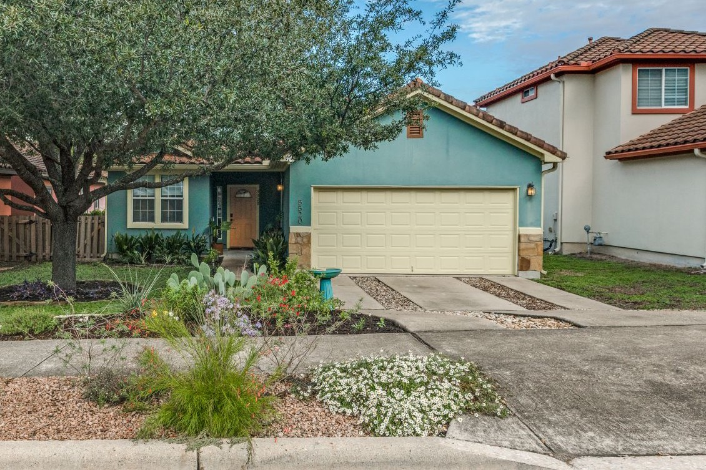
      </figure>
    </div>
    <div class="wrap intro">
      <div class="intro-lead">
        <p class="say">This bright, move-in ready, single-story Mediterranean home in <em>the Agave neighborhood</em> features a beautifully maintained native Texas shade garden.</p>
        <div class="intro-plant" data-plant="white"></div>
      </div>
      <dl class="glance nums">
        <div><dt>Price</dt><dd><span class="todo">To be set</span></dd></div>
        <div><dt>Bedrooms</dt><dd>3, plus a flex room</dd></div>
        <div><dt>Bathrooms</dt><dd>2 full</dd></div>
        <div><dt>Living area</dt><dd>1,289 sq ft</dd></div>
        <div><dt>Ceilings</dt><dd>10 ft</dd></div>
        <div><dt>Lot</dt><dd>0.14 acre, fenced</dd></div>
        <div><dt>Parking</dt><dd>2-car garage</dd></div>
        <div><dt>Built</dt><dd>2006, one story</dd></div>
      </dl>
      <div class="intro-actions">
        <a class="more" href="#visit">Book a Showing</a>
        <a class="go" href="#details">View More Details</a>
      </div>
    </div>
  </section>

  <section id="arrive" class="band" data-tone="stucco" data-chapter>
    <div class="wrap head">
      <p class="label">Arrive</p>
      <h2>From the curb.</h2>
      <p class="lede">A blue stucco Tuscan home with a classic terracotta tile roof and a coral front door. A live oak shades the front, and a drought-tolerant native yard reduces lawn maintenance.</p>
    </div>
    <div class="bleed-l">
      <figure class="ph r32 fit-m">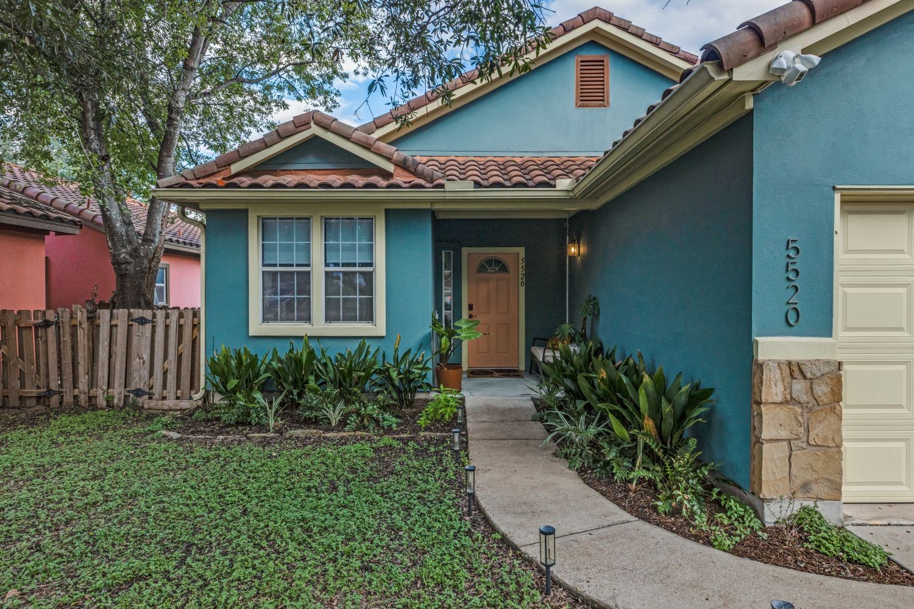</figure>
    </div>
    <div class="grid wrap">
      <figure class="ph r32 c7">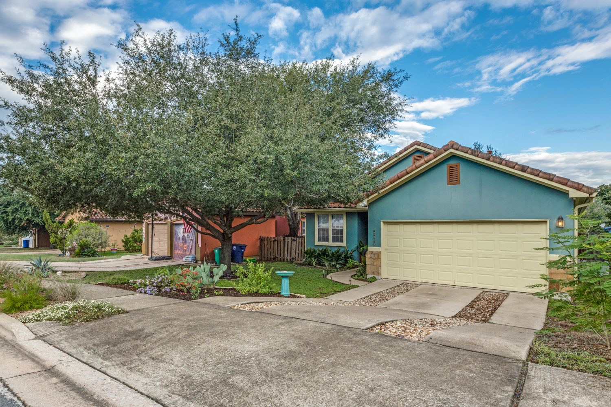</figure>
      <div class="note c5">
        <h3>Street view</h3>
        <ul class="plain">
          <li>Durable concrete tile roof (average life span 50-100 years)</li>
          <li>2-car garage</li>
          <li>Mature live oak for midday shade</li>
          <li>Native and drought-tolerant full sun and full shade plants</li>
        </ul>
      </div>
    </div>
    <div class="grid wrap">
      <figure class="ph r45 c5">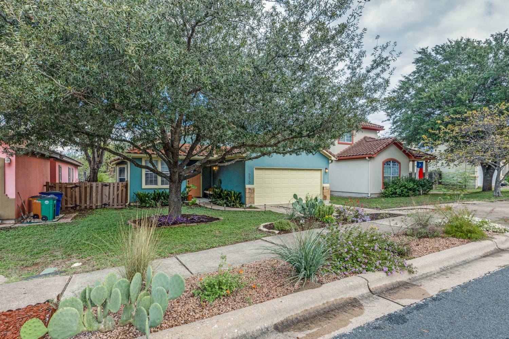</figure>
      <div class="c7 arrive-art" data-plant="firecracker" data-depth=".08"></div>
    </div>
  </section>

  <section id="work" class="band" data-tone="forsythia" data-chapter>
    <div class="wrap head">
      <p class="label">Work</p>
      <h2>An office with a door.</h2>
      <p class="lede">The flex room sits at the front of the house, behind French doors and apart from the three bedrooms. Close them at nine, open them at five, and the workday stays in its own room. The window looks out on the street, so you can watch neighbors and dogs stroll by and stay connected to the neighborhood between meetings.</p>
    </div>
    <div class="bleed-l">
      <figure class="ph r169">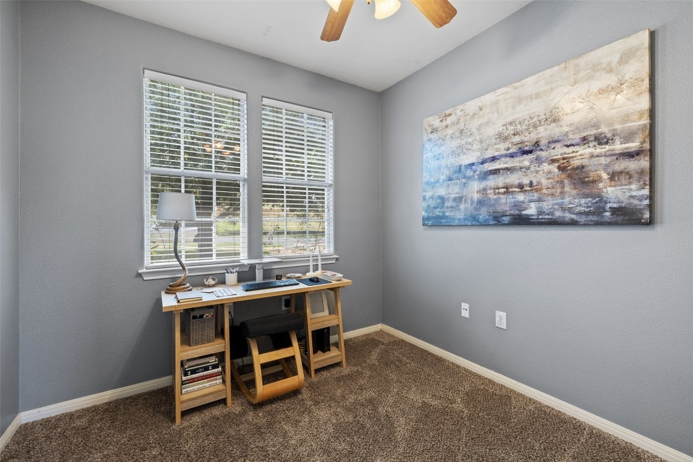</figure>
    </div>
    <div class="grid wrap">
      <div class="note c5">
        <h3>Set it up your way</h3>
        <ul class="plain">
          <li>A quiet home office</li>
          <li>A studio</li>
          <li>A home gym</li>
        </ul>
        <p><span class="todo">Add internet providers and speeds</span></p>
      </div>
      <figure class="ph r32 c7">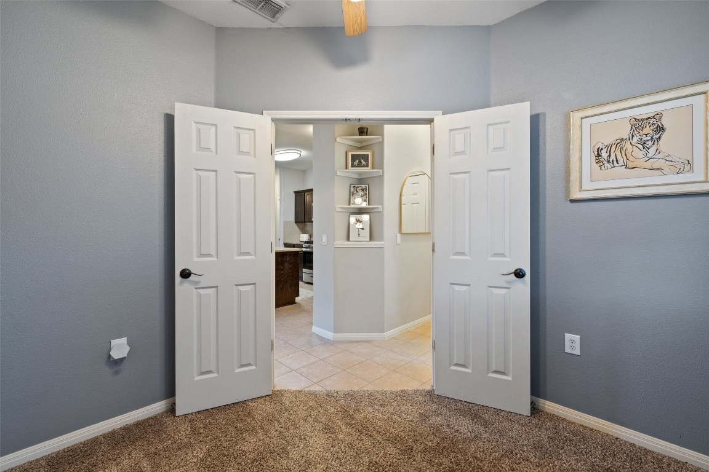</figure>
    </div>
  </section>

  <section id="inside" class="band" data-tone="paper" data-chapter>
    <div class="wrap head">
      <p class="label">Inside</p>
      <h2>Open, flowing space.</h2>
      <div class="copy lede">
        <p>Ten-foot ceilings and durable tile run through the living room, dining area and kitchen. Each area feels distinct while staying visually connected, so nothing is closed off and light and views reach every end of the house. From the living room, the view opens onto the peaceful retreat of the backyard.</p>
        <p>The kitchen has granite counters, stainless appliances, recessed lighting and a breakfast bar. Modern light fixtures on dimmers set the mood, bright for meal prep and low for a quiet evening.</p>
      </div>
    </div>
    <div class="bleed-l">
      <figure class="ph r169">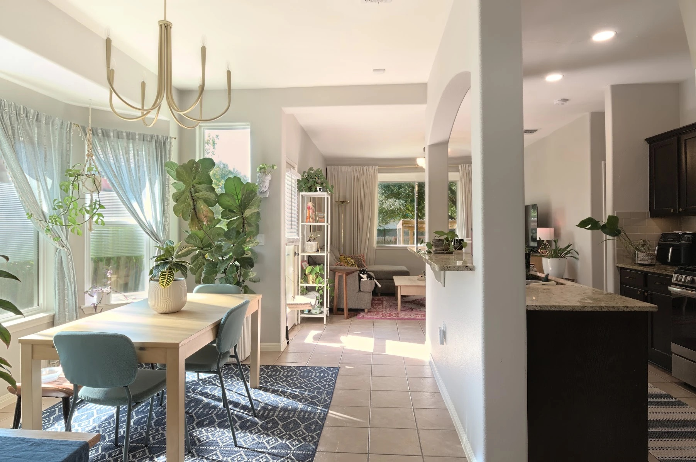</figure>
    </div>
    <div class="grid wrap">
      <figure class="ph r32 c7">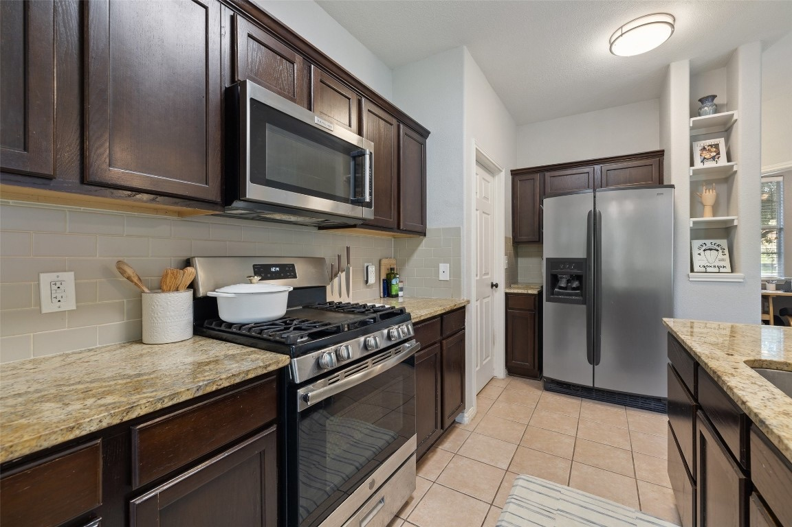</figure>
      <figure class="ph r32 c5">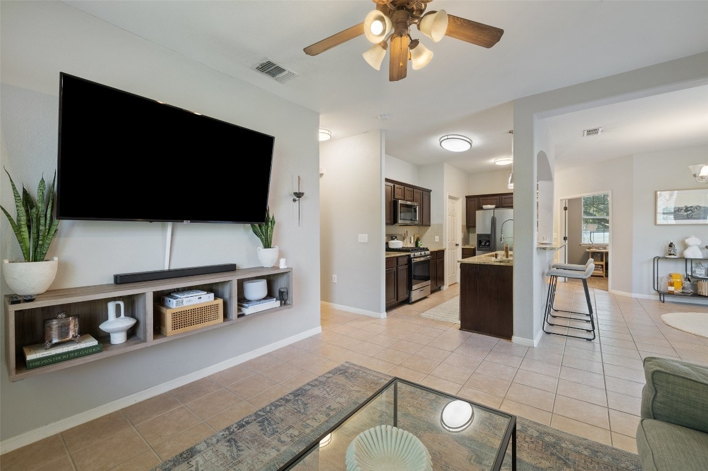</figure>
    </div>
    <div class="bleed-l">
      <figure class="ph r169">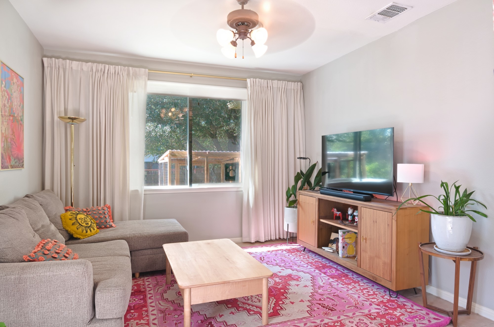</figure>
    </div>
    <div class="wrap">
      <div class="copy">
        <h3>Comfortable, year-round</h3>
        <p>The living room and dining room windows were replaced in 2025 with Anlin Panoramic low-E glass. They open easily, filter the sun and heat, and help soften outside noise. With mature trees shading the hottest part of the day, utility costs stay low. <span class="todo">Add your 12-month average</span></p>
      </div>
    </div>
    <div class="grid wrap">
      <div class="note c5">
        <h3>Laundry, pantry and storage</h3>
        <p>The laundry room doubles as a pantry, with shelving for supplies and dry goods, and opens straight into the garage.</p>
        <p>Storage runs through the whole house: generous closets in every bedroom, a walk-in closet in the primary suite, and built-in shelving and workshop space in the garage. <span class="todo">Confirm pantry and closet details</span></p>
      </div>
      <figure class="ph r32 c7">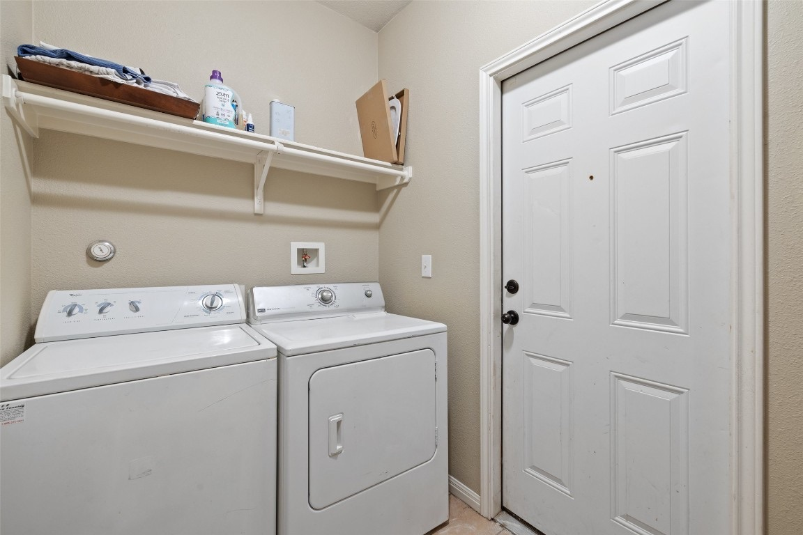</figure>
    </div>
  </section>

  <section id="rest" class="band" data-tone="gaura" data-chapter>
    <div class="float rest-plant" data-plant="rainbow" data-depth=".12"></div>
    <div class="wrap head">
      <p class="label">Rest</p>
      <h2>Three comfortable bedrooms.</h2>
      <p class="lede">The primary suite fits a king-size bed and has its own bath and walk-in closet, a custom walnut headboard and solid maple floating nightstands with dimmable lighting. The other two bedrooms share the second full bath.</p>
    </div>
    <div class="bleed-l">
      <figure class="ph r169">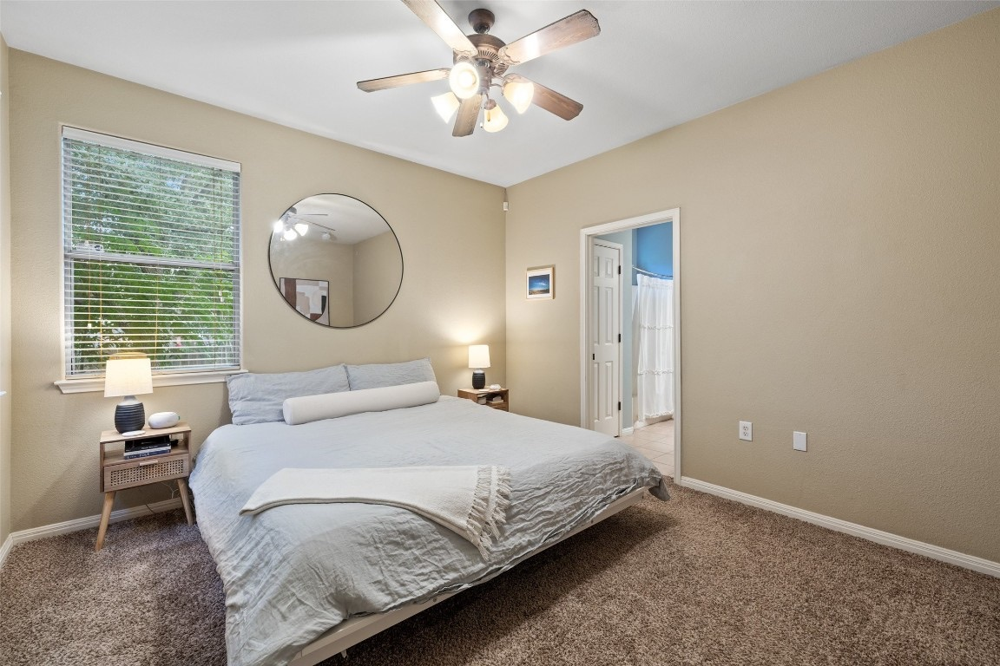</figure>
    </div>
    <div class="grid wrap">
      <figure class="ph r32 c7">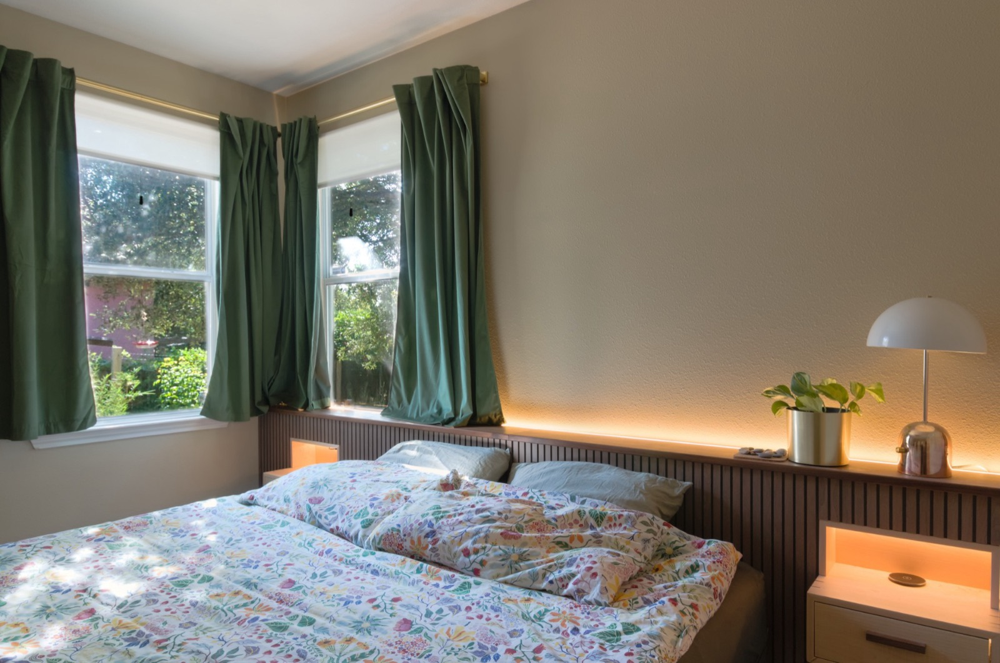</figure>
      <figure class="ph r32 c5">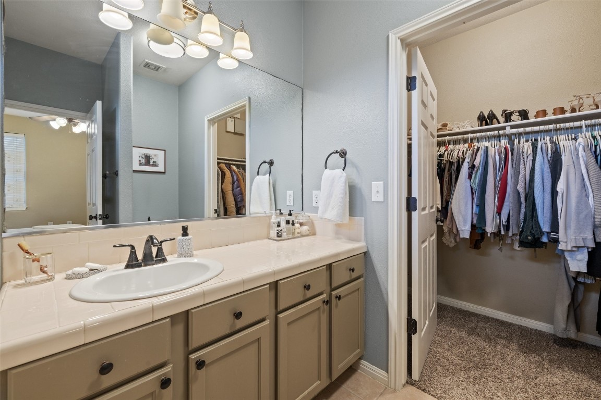</figure>
      <figure class="ph r32 c6">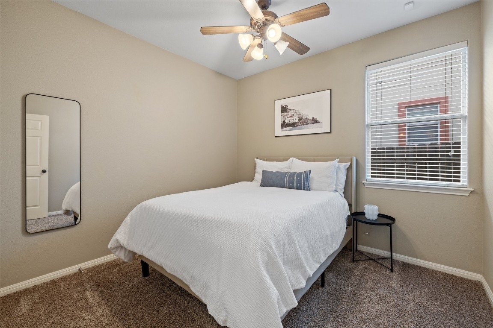</figure>
      <figure class="ph r32 c6">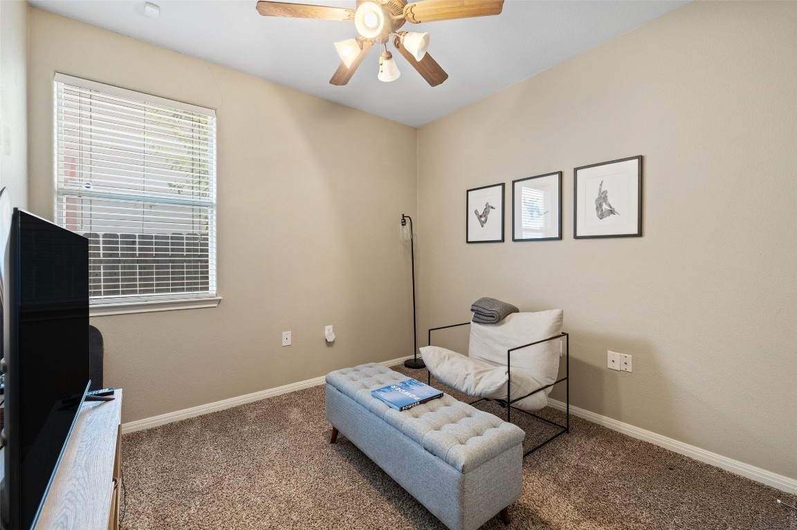</figure>
    </div>
    <div class="wrap plan-wrap">
      <h3>Floor plan</h3>
      <figure class="plan">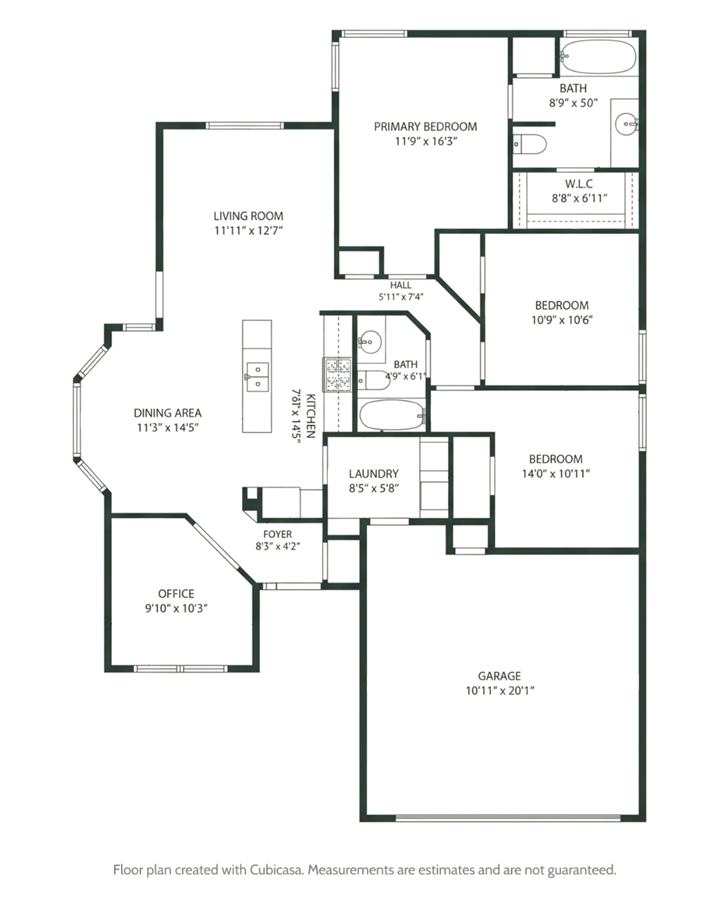</figure>
    </div>
  </section>

  <section id="outback" data-tone="oak" data-chapter>
    <div class="yard">
      <div class="yard-step"><div class="yard-stage">
        <figure class="ph">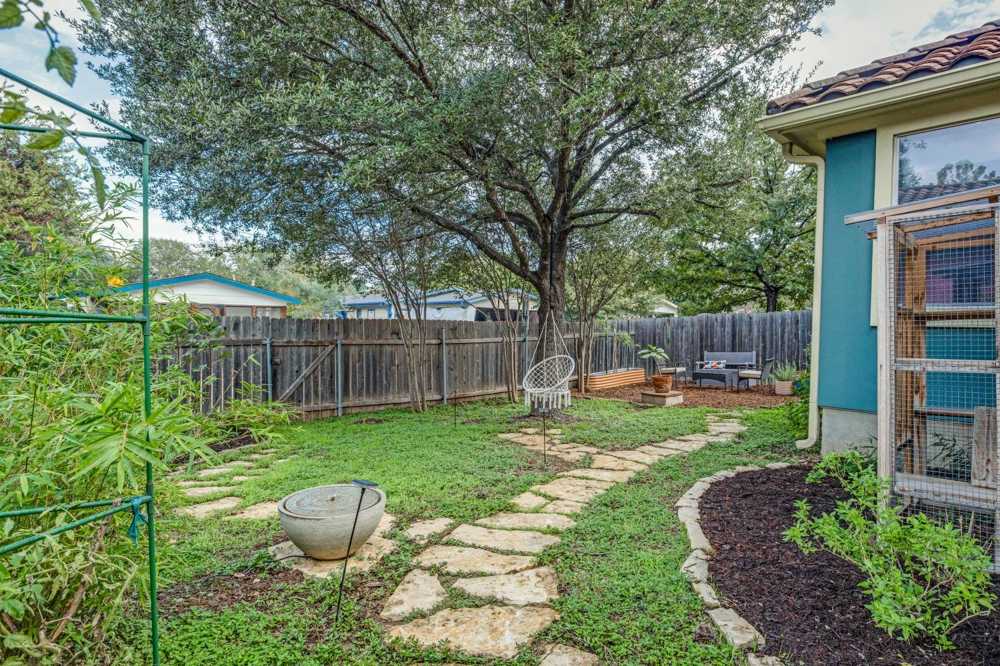</figure>
        <div class="yard-copy"><p class="label">Out back</p><h2>A yard with room for everything.</h2><p>Sun, shade, paths and planting beds give the fenced yard distinct spaces to relax, entertain and grow, all under a mature live oak and redbuds.</p></div>
      </div></div>
      <div class="yard-step"><div class="yard-stage">
        <figure class="ph">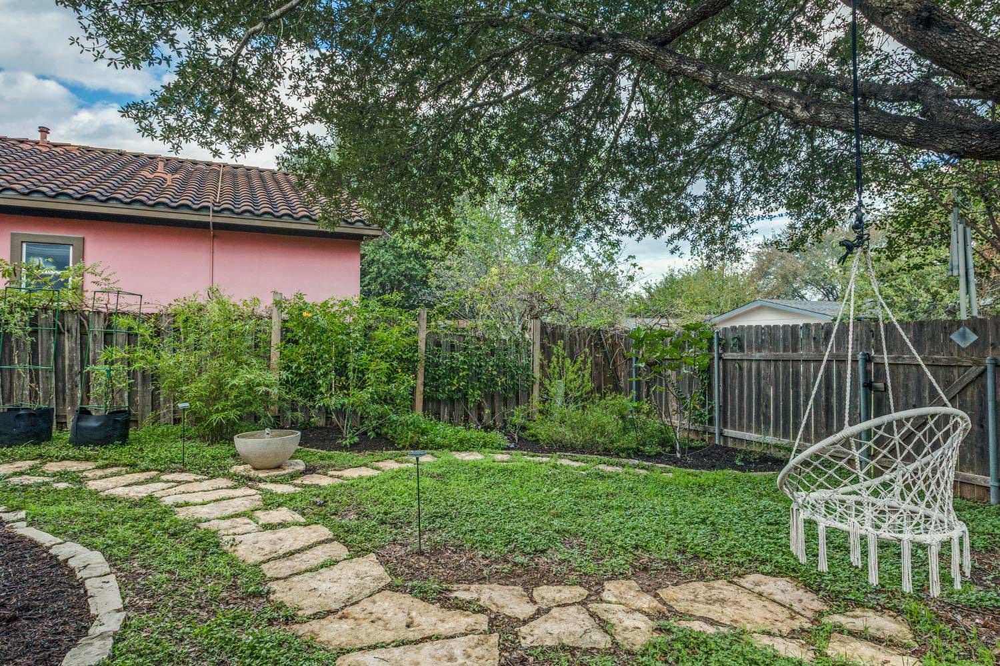</figure>
        <div class="yard-copy"><p class="label">Midday</p><h2>Shade when you want it.</h2><p>A limestone footpath winds past a stone fountain and native beds along the fence, all under the shade of the oak.</p></div>
      </div></div>
      <div class="yard-step"><div class="yard-stage">
        <figure class="ph">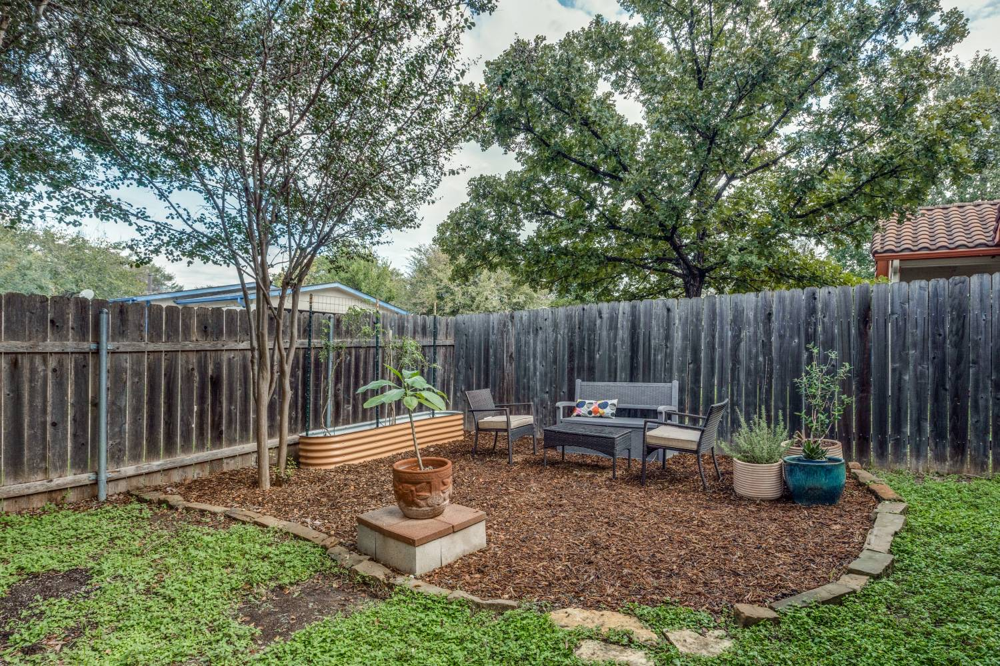</figure>
        <div class="yard-copy"><p class="label">Gather</p><h2>Room to grow.</h2><p>The back corner pairs a seating area for friends with raised metal veggie beds on a soak hose, so you can host and harvest in the same spot.</p></div>
      </div></div>
      <div class="yard-step"><div class="yard-stage">
        <figure class="ph">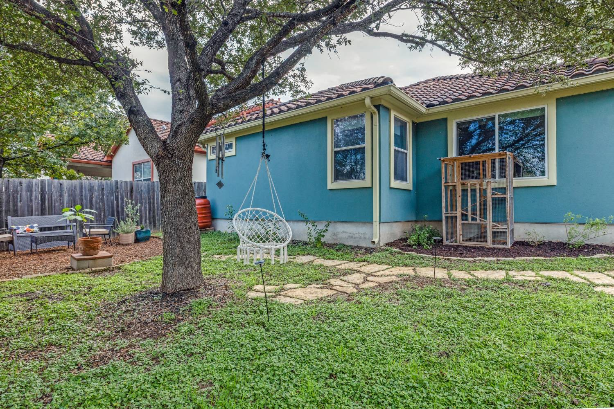</figure>
        <div class="yard-copy"><p class="label">Upkeep</p><h2>Easy to keep up.</h2><p>Drought-tolerant native groundcover stands in for thirsty lawn, a rain barrel that stays with the house catches runoff, and the trees were trimmed in September 2026. The oak also shades the back of the house through the hottest part of the day.</p></div>
      </div></div>
    </div>
  </section>

  <section id="garden" class="band" data-tone="leaf">
    <div class="wrap head">
      <p class="label">Garden</p>
      <h2>A field guide to the yard.</h2>
      <p class="lede">Native Texas plants, picked to thrive here without much fuss. Something is in bloom from March to November.</p>
    </div>
    <div class="wrap plates peek" id="peek"></div>
    <div class="wrap">
      <div class="intro-actions">
        <a class="more" href="#care" id="moreLink">Plant and garden guide</a>
      </div>
    </div>
  </section>

  <section id="nearby" class="band" data-tone="salvia" data-chapter>
    <div class="wrap head">
      <p class="label">Nearby</p>
      <h2>East Austin, 78724.</h2>
      <p class="lede">The Agave neighborhood has sidewalks and bike routes, and sits minutes from the Southern Walnut Creek Trail, Mueller and Highway 183.</p>
    </div>
    <div class="bleed-l">
      <figure class="ph r219"><div class="shot" data-drift></div><figcaption><b>Map</b> Custom illustrated map in the same ink style, with the favorites listed below.</figcaption></figure>
    </div>
    <div class="wrap columns">
      <div class="stack">
        <h3>Regular drives</h3>
        <dl class="spec nums">
          <dt>Mueller, H-E-B and shops</dt><dd>About 12 min</dd>
          <dt>Downtown Austin</dt><dd>About 15 min</dd>
          <dt>Austin-Bergstrom Airport</dt><dd><span class="todo">— min</span></dd>
          <dt>Tesla Giga Texas</dt><dd><span class="todo">— min</span></dd>
        </dl>
        <h3>Assigned schools</h3>
        <dl class="spec">
          <dt>District</dt><dd>Manor ISD</dd>
          <dt>Elementary</dt><dd>Oak Meadows</dd>
          <dt>Middle</dt><dd>Decker</dd>
          <dt>High</dt><dd>Manor</dd>
        </dl>
        <p class="fine">From the 2024 listing record. Buyers should confirm assignments with the district.</p>
      </div>
      <div class="stack">
        <h3>Close to home</h3>
        <dl class="spec">
          <dt>Southern Walnut Creek Trail</dt><dd>Biking and walking</dd>
          <dt>Colony Park Pool</dt><dd>Neighborhood pool</dd>
          <dt>YMCA East Communities</dt><dd>Minutes away</dd>
          <dt>The Collective East</dt><dd>New center on Johnny Morris Road</dd>
          <dt>JD's</dt><dd>Local groceries</dd>
          <dt>Flamin' Burgers</dt><dd>A sneaky good burger</dd>
        </dl>
      </div>
    </div>
  </section>

  <section id="details" class="band" data-tone="paper" data-chapter>
    <div class="wrap head">
      <p class="label">Details</p>
      <h2 class="one-line">All about the property</h2>
    </div>
    <div class="wrap">
      <dl class="spec spec-wide nums">
        <dt>Price</dt><dd><span class="todo">To be set</span></dd>
        <dt>Bedrooms</dt><dd>3, plus a flex room</dd>
        <dt>Bathrooms</dt><dd>2 full</dd>
        <dt>Living area</dt><dd>1,289 sq ft</dd>
        <dt>Ceilings</dt><dd>10 ft</dd>
        <dt>Lot</dt><dd>0.14 acres, fenced</dd>
        <dt>Built</dt><dd>2006</dd>
        <dt>Stories</dt><dd>1</dd>
        <dt>Exterior</dt><dd>Stucco</dd>
        <dt>Roof</dt><dd>Original concrete tile in a terracotta style, with an expected lifespan of 50+ years</dd>
        <dt>Garage</dt><dd>Attached 2-car, with workshop space and built-in shelving</dd>
        <dt>Storage</dt><dd>Laundry and pantry room, walk-in primary closet, closets in every bedroom</dd>
        <dt>Heating and cooling</dt><dd>Original 3-ton Rheem system, serviced twice a year, heating and cooling efficiently and reliably</dd>
        <dt>Flooring</dt><dd>Tile in main living areas, carpet in bedrooms</dd>
        <dt>Smart home</dt><dd>Smart thermostat, keyless entry, transferable Wyze security</dd>
        <dt>Agave POA</dt><dd>$70 per quarter</dd>
        <dt>Property tax</dt><dd>$6,841 (2024) <span class="todo">Update</span></dd>
        <dt>School district</dt><dd>Manor ISD</dd>
        <dt>County</dt><dd>Travis</dd>
      </dl>
    </div>
    <div class="wrap stack">
      <h3>Recent work</h3>
      <ul class="bullets two-col">
        <li>Three new native plant garden beds</li>
        <li>Native, heat-tolerant plantings in the curbside strip</li>
        <li>Mulched seating and vegetable bed area</li>
        <li>Winding natural limestone path</li>
        <li>Live oaks trimmed in September 2026</li>
        <li>Custom walnut headboard and solid maple floating nightstands</li>
        <li>New solar shades, curtains, dimmable lighting and fixtures</li>
        <li>Anlin Panoramic windows installed in the living room and dining room in 2025</li>
      </ul>
    </div>
  </section>

  <section id="packet" class="band" data-tone="mist" data-chapter>
    <div class="wrap head">
      <h2>Buyer information packet</h2>
      <p class="lede">Request property disclosures and records.</p>
    </div>
    <div class="wrap columns">
      <div class="stack">
        <h3>What's included</h3>
        <ul class="doc-list">
          <li>Seller's disclosure notice</li>
          <li>Survey and T-47 affidavit</li>
          <li>Most recent property tax bill</li>
          <li>12 months of utility costs</li>
          <li>HVAC service records</li>
          <li>2025 window receipts and manufacturer warranty</li>
          <li>September 2026 tree trimming receipt</li>
          <li>Agave POA documents</li>
          <li>Offer instructions</li>
          <li>Garden care guide</li>
        </ul>
      </div>
      <form class="form packet" id="packetForm">
        <label for="p-email" class="full">Email<input id="p-email" name="email" type="email" autocomplete="email" required></label>
        <button class="send" type="submit">Request the Complete Buyer Information Packet</button>
        <p class="fine full" id="packetNote" role="status">This form is a preview and does not send anything yet.</p>
      </form>
    </div>
  </section>

  <section id="faq" class="band" data-tone="paper">
    <div class="wrap head">
      <h2>FAQ</h2>
    </div>
    <div class="wrap">
      <div class="asks faq">
        <details><summary>Why are you selling?</summary><p>I'm relocating out of state, and I have flexibility on the timeline.</p></details>
        <details><summary>How did you arrive at the price?</summary><p><span class="todo">Recent nearby sales and the appraisal, if you get one</span></p></details>
        <details><summary>How do showings work?</summary><p>The home is owner-occupied, so showings are by appointment. Buyers without an agent are asked for a pre-approval letter or proof of funds and a photo ID, which are deleted after the showing. For weekend showings, documents are due by noon on Friday.</p></details>
        <details><summary>Do you work with buyer's agents?</summary><p>Yes. I'm open to all written offers. Feel free to include your requested commission in the contract. I evaluate every offer on its net terms.</p></details>
        <details><summary>How do I make an offer?</summary><p>Use the standard TREC One to Four Family Residential Contract and email it with a pre-approval letter or proof of funds dated within the last 30 days. Title is through Rise Title. Please allow 24 to 48 hours for a response.</p></details>
        <details><summary>What stays with the house?</summary><p>The Wyze security system, the rain barrel and the garden care guide.<span class="todo">Add appliances, shades and anything else</span></p></details>
      </div>
      </div>
    </div>
  </section>

  <section id="visit" class="band" data-tone="oak" data-chapter>
    <div class="float visit-plant" data-plant="yellowLight" data-depth=".1"></div>
    <div class="wrap head">
      <p class="label">Visit</p>
      <h2>Come see it in person.</h2>
      <p class="lede">Showings are by appointment. Text or email works best for questions, showings and offers.</p>
      <dl class="reach">
        <div><dt>Text</dt><dd>(512) 920-0588</dd></div>
        <div><dt>Email</dt><dd>5520ToscanaAvenue@gmail.com</dd></div>
      </dl>
    </div>
    <div class="wrap">
      <form class="form" id="form">
        <label for="f-name">Your name<input id="f-name" name="name" autocomplete="off" required></label>
        <label for="f-email">Email<input id="f-email" name="email" type="email" autocomplete="email" required></label>
        <label for="f-phone">Phone<input id="f-phone" name="phone" type="tel" autocomplete="tel" required></label>
        <label for="f-role" class="full">Which describes you?<select id="f-role" name="role"><option>Working with an agent</option><option>I am an agent</option><option>Buying on my own and ready, with pre-approval or proof of funds</option><option>Just looking for now</option></select></label>
        <button class="send" type="submit">Request a showing</button>
        <p class="fine full" id="formNote" role="status">This form is a preview and does not send anything yet.</p>
      </form>
    </div>
    <div class="wrap">
      <p class="fine" style="max-width:38em">5520 Toscana Ave, Austin, TX 78724. Offered by the owner without regard to race, color, religion, sex, disability, familial status or national origin. Details are believed accurate but are not guaranteed. Buyers should verify them independently.</p>
    </div>
  </section>
</main>

<main id="viewPlants" hidden>
  <section class="band" data-tone="leaf">
    <div class="wrap head">
      <a class="go" href="#garden">Back to the house</a>
      <h1 class="page-title">The yard, plant by plant.</h1>
      <p class="lede" id="plantCount">Every plant at 5520 Toscana, with care notes for the ones that need them.</p>
    </div>
    <div class="wrap plates" id="plates"></div>
    <div class="wrap cal-wrap">
      <h3>Something is in bloom from March to November.</h3>
      <div class="cal" id="cal" role="img" aria-label="Bloom calendar: autumn sage, white gaura and rainbow gaura March to November, forsythia sage August to November, firecracker fern April to November, calylophus March to September."></div>
      <p class="fine">A printed care guide with these watering and pruning notes stays with the house. <span class="todo">Confirm the exact months</span></p>
    </div>
    <div class="wrap beds" id="beds"></div>
    <div class="wrap intro-actions"><a class="more" href="#visit">Book a showing</a><a class="go" href="#care">Garden care guide</a></div>
  </section>
</main>

<main id="viewCare" hidden>
  <section class="band care" data-tone="leaf">
    <div class="wrap head">
      <a class="go" href="#garden">Back to the house</a>
      <h1 class="page-title">Garden care guide</h1>
      <p class="lede">How to keep the yard at 5520 Toscana thriving, zone by zone. Nearly everything is native and drought tolerant, so the work comes in a few short sessions each season.</p>
      <p class="fine"><span class="todo">Draft care notes. Review and add your own routines.</span></p>
    </div>
    <div class="wrap care-block">
      <h2>The year at a glance</h2>
      <div class="care-year"><article class="season"><p class="label">February to mid-March</p><h3>Late winter</h3><ul class="bullets"><li>Cut back perennials once frost danger passes</li><li>Clean up old fern fronds and cast iron leaves</li><li>Plant cool-season vegetables</li><li>Do not prune the oaks</li></ul></article><article class="season"><p class="label">Mid-March to May</p><h3>Spring</h3><ul class="bullets"><li>Rake live oak leaf drop</li><li>Refresh mulch in every bed</li><li>Plant warm-season vegetables</li><li>Trim crossvine after it blooms</li></ul></article><article class="season"><p class="label">June to September</p><h3>Summer</h3><ul class="bullets"><li>Water deeply in the early morning</li><li>Deadhead autumn sage</li><li>Harvest figs around August</li><li>Oak pruning window opens in July</li></ul></article><article class="season"><p class="label">October to November</p><h3>Fall</h3><ul class="bullets"><li>Peak bloom for salvias and mistflower</li><li>Plant cool-season crops and new natives</li><li>Light shaping only</li><li>Leave seed heads for birds</li></ul></article></div>
    </div>
    <div class="wrap care-block">
      <h2>Front yard</h2>
        <article class="zone">
          <header class="zone-head"><p class="label">Full sun</p><h3>Curbside strip and corner bed</h3><p>The hottest spot on the lot, between the sidewalk and the street, planted for reflected heat and very little water.</p></header>
          <div class="zone-body">
            <div><h4>Conditions</h4><dl class="zone-facts"><dt>Light</dt><dd>6+ hours of direct sun, plus heat off the pavement</dd><dt>Water</dt><dd>A deep soak every 1 to 2 weeks in summer once established; little to none in winter</dd><dt>Ground</dt><dd>Rock mulch keeps roots cool and weeds down</dd></dl></div>
            <div><h4>Care through the year</h4><ul class="bullets"><li>Late winter: once frost danger passes (about mid-March), cut salvias, lantana, skullcap and mistflower back by a third</li><li>Spring: pull dead yucca leaves and top up the rock mulch</li><li>Summer: water early in the morning and deadhead autumn sage for more blooms</li><li>Fall: light shaping only; leave seed heads for the birds</li></ul></div>
            <div><h4>Plants here</h4><ul class="zone-plants"><li>Red yucca</li><li>Yellow yucca</li><li>Trailing lantana</li><li>Coreopsis</li><li>Damianita daisy</li><li>Firecracker fern</li><li>Woolly globe mallow</li><li>Spineless prickly pear</li><li>White mistflower</li><li>Autumn sage</li><li>Purple skullcap</li><li>Rock rose</li><li>Winecup <span class="todo">Confirm</span></li><li>Mexican marigold</li><li>Yellow pride of Barbados</li></ul></div>
          </div>
        </article>
        <article class="zone">
          <header class="zone-head"><p class="label">Part sun</p><h3>Under the live oak by the curb</h3><p>Dappled light under the big front oak, with roots that compete for water.</p></header>
          <div class="zone-body">
            <div><h4>Conditions</h4><dl class="zone-facts"><dt>Light</dt><dd>Filtered sun that shifts through the day</dd><dt>Water</dt><dd>Weekly in summer heat, since the oak takes its share</dd><dt>Ground</dt><dd>Mulch kept a hand-width away from the trunk</dd></dl></div>
            <div><h4>Care through the year</h4><ul class="bullets"><li>Spring: rake up the live oak leaf drop (March and April) and refresh mulch</li><li>Never pile soil over the oak roots or against the trunk</li><li>Prune the oak only from July through January to avoid oak wilt, and seal cuts right away</li><li>Summer: check soil moisture weekly</li></ul></div>
            <div><h4>Plants here</h4><ul class="zone-plants"><li><span class="todo">Add the plants in this bed</span></li></ul></div>
          </div>
        </article>
        <article class="zone">
          <header class="zone-head"><p class="label">Deep shade</p><h3>Entrance beds by the front door</h3><p>Cool, sheltered beds along the walk that stay green with very little care.</p></header>
          <div class="zone-body">
            <div><h4>Conditions</h4><dl class="zone-facts"><dt>Light</dt><dd>Bright shade, little direct sun</dd><dt>Water</dt><dd>Evenly moist; weekly in summer, less in winter</dd><dt>Ground</dt><dd>Rich, mulched beds</dd></dl></div>
            <div><h4>Care through the year</h4><ul class="bullets"><li>Late winter: cut out brown or tattered leaves and old fronds</li><li>Spring: divide crowded cast iron plants if needed</li><li>Summer: water weekly; these beds dry slowly</li><li>Fall and winter: leave alone; both plants are evergreen</li></ul></div>
            <div><h4>Plants here</h4><ul class="zone-plants"><li>Cast iron plant</li><li>Texas holly fern</li><li><span class="todo">Add any others</span></li></ul></div>
          </div>
        </article>
    </div>
    <div class="wrap care-block">
      <h2>Backyard</h2>
        <article class="zone">
          <header class="zone-head"><p class="label">Sun to part sun</p><h3>Back corner bed and trellis</h3><p>A hummingbird-friendly bed with crossvine on the trellis and the Ischia fig.</p></header>
          <div class="zone-body">
            <div><h4>Conditions</h4><dl class="zone-facts"><dt>Light</dt><dd>Morning sun, some afternoon shade from the trees</dd><dt>Water</dt><dd>Weekly in summer; deeper soaks during heat waves</dd><dt>Ground</dt><dd>Mulched bed</dd></dl></div>
            <div><h4>Care through the year</h4><ul class="bullets"><li>Late winter: after the last freeze, cut esperanza, lantana, flame acanthus and mistflower back hard to fresh growth</li><li>Spring: trim crossvine after its spring bloom</li><li>Summer: harvest figs around August, when they are green and soft</li><li>Winter: prune the fig lightly and cover it during hard freezes</li></ul></div>
            <div><h4>Plants here</h4><ul class="zone-plants"><li>Crossvine (on the trellis)</li><li>Esperanza yellow bells</li><li>Autumn sage</li><li>Gregg's blue mistflower</li><li>Ischia fig</li><li>Gold lantana</li><li>Flame acanthus</li></ul></div>
          </div>
        </article>
        <article class="zone">
          <header class="zone-head"><p class="label">Shade</p><h3>Along the back of the house</h3><p>Three kinds of Turk's cap that thrive in the house's shade and bring in hummingbirds.</p></header>
          <div class="zone-body">
            <div><h4>Conditions</h4><dl class="zone-facts"><dt>Light</dt><dd>Shade for most of the day</dd><dt>Water</dt><dd>Weekly in summer</dd><dt>Ground</dt><dd>Mulched bed against the foundation</dd></dl></div>
            <div><h4>Care through the year</h4><ul class="bullets"><li>Late winter: cut Turk's cap back to 6 to 12 inches</li><li>Spring: thin spreading clumps to keep the bed tidy</li><li>Summer: water weekly and enjoy the hummingbirds</li><li>Fall: blooms continue until the first freeze</li></ul></div>
            <div><h4>Plants here</h4><ul class="zone-plants"><li>Pink Turk's cap</li><li>Turk's cap</li><li>Big Momma Turk's cap</li></ul></div>
          </div>
        </article>
        <article class="zone">
          <header class="zone-head"><p class="label">Gathering corner</p><h3>Raised beds and seating area</h3><p>Mulched corner with raised metal veggie beds on a soak hose, beside the seating area.</p></header>
          <div class="zone-body">
            <div><h4>Conditions</h4><dl class="zone-facts"><dt>Light</dt><dd>Sun for most of the day</dd><dt>Water</dt><dd>Soak hose; check the timer at the start of each season</dd><dt>Ground</dt><dd>Raised beds with garden soil; mulch around the seating</dd></dl></div>
            <div><h4>Care through the year</h4><ul class="bullets"><li>Late winter: plant cool-season greens (February to March)</li><li>Spring: plant warm-season vegetables (March to April) and top up compost</li><li>Fall: plant a second round of cool-season crops (September to October)</li><li>Yearly: refresh the mulch around the seating area</li></ul></div>
            <div><h4>Plants here</h4><ul class="zone-plants"><li>Raised metal vegetable beds</li><li>Seasonal vegetables and herbs</li><li>Rosemary</li></ul></div>
          </div>
        </article>
        <article class="zone">
          <header class="zone-head"><p class="label">Trees</p><h3>Live oaks and redbuds</h3><p>The mature trees that shade the house and yard.</p></header>
          <div class="zone-body">
            <div><h4>Conditions</h4><dl class="zone-facts"><dt>Last trimmed</dt><dd>September 2026</dd><dt>Pruning window</dt><dd>July through January for oaks</dd><dt>Bloom</dt><dd>Redbuds flower in late winter</dd></dl></div>
            <div><h4>Care through the year</h4><ul class="bullets"><li>Have an arborist check the oaks every few years</li><li>Avoid pruning oaks from February through June because of oak wilt</li><li>Rake spring leaf drop from beds and paths</li><li>Water young redbuds during long dry spells</li></ul></div>
            <div><h4>Plants here</h4><ul class="zone-plants"><li>Live oaks (front and back)</li><li>Redbuds (back)</li></ul></div>
          </div>
        </article>
    </div>
    <div class="wrap care-block">
      <h2>Plant glossary</h2>
      <p class="lede">Every plant in the yard, A to Z. Illustrations are placeholders until each plant is drawn from photos of the garden.</p>
      <p class="fine"><span class="todo">Bloom, winter and water notes are general Central Texas guidance. Confirm against your experience.</span></p>
      <div class="glossary" id="glossary"></div>
    </div>
    <div class="wrap intro-actions"><a class="more" href="#visit">Book a showing</a><a class="go" href="#garden">Back to the house</a></div>
  </section>
</main>

<dialog class="lb" id="lightbox" aria-label="Photo slideshow">
  <div class="lb-top">
    <span class="lb-count" id="lbCount" aria-live="polite"></span>
    <button class="lb-btn" id="lbClose" type="button" aria-label="Close slideshow"><svg viewBox="0 0 24 24" width="22" height="22" fill="none" stroke="currentColor" stroke-width="1.8" stroke-linecap="round" aria-hidden="true"><path d="M6 6l12 12M18 6L6 18"/></svg></button>
  </div>
  <div class="lb-stage" id="lbStage">
    <button class="lb-btn lb-prev" id="lbPrev" type="button" aria-label="Previous photo"><svg viewBox="0 0 24 24" width="22" height="22" fill="none" stroke="currentColor" stroke-width="1.8" stroke-linecap="round" stroke-linejoin="round" aria-hidden="true"><path d="M15 5l-7 7 7 7"/></svg></button>
    
    <button class="lb-btn lb-next" id="lbNext" type="button" aria-label="Next photo"><svg viewBox="0 0 24 24" width="22" height="22" fill="none" stroke="currentColor" stroke-width="1.8" stroke-linecap="round" stroke-linejoin="round" aria-hidden="true"><path d="M9 5l7 7-7 7"/></svg></button>
  </div>
  <p class="lb-cap" id="lbCap"></p>
  <div class="lb-thumbs" id="lbThumbs"></div>
</dialog>

<script>
(function () {
  /* ---------- Plant illustrations: hairline ink over soft grainy color. ---------- */
  var C = { leaf:"#7E9862", leaf2:"#97AC70", deep:"#5A7856", stem:"#6F8A58", blob:"#A5B985", coral:"#E5674F", yellow:"#EFCB5B", pink:"#E88DAA", magenta:"#C2437F", white:"#FFFDF7", blush:"#F6D9DF", anther:"#E3B94B", amber:"#C79A55", brown:"#6B4A30" };
  document.body.insertAdjacentHTML("afterbegin",'<svg width="0" height="0" style="position:absolute" aria-hidden="true"><filter id="gouache" x="-4%" y="-4%" width="108%" height="108%"><feTurbulence type="fractalNoise" baseFrequency=".04" numOctaves="2" seed="4" result="w"/><feDisplacementMap in="SourceGraphic" in2="w" scale="5" result="d"/><feTurbulence type="fractalNoise" baseFrequency=".85" numOctaves="2" seed="9" result="g"/><feColorMatrix in="g" type="matrix" values="0 0 0 0 0 0 0 0 0 0 0 0 0 0 0 0 0 0 -1.5 1.65" result="a"/><feComposite in="d" in2="a" operator="in"/></filter></svg>');
  function seeded(s){ return function(){ s=(s*1664525+1013904223)>>>0; return s/4294967296; }; }
  function n(v){ return v.toFixed(1); }
  function frame(x,y,a){ var c=Math.cos(a), s=Math.sin(a); return function(u,v){ return n(x+u*c-v*s)+" "+n(y+u*s+v*c); }; }
  function smooth(pts,steps){
    var out=[];
    for(var i=0;i<pts.length-1;i++){ var p0=pts[i-1]||pts[i], p1=pts[i], p2=pts[i+1], p3=pts[i+2]||p2;
      for(var k=0;k<steps;k++){ var t=k/steps, t2=t*t, t3=t2*t;
        out.push([0,1].map(function(d){ return .5*(2*p1[d]+(p2[d]-p0[d])*t+(2*p0[d]-5*p1[d]+4*p2[d]-p3[d])*t2+(3*p1[d]-p0[d]-3*p2[d]+p3[d])*t3); })); } }
    out.push(pts[pts.length-1]); return out;
  }
  function at(line,t){ var i=Math.min(Math.floor(t*(line.length-1)),line.length-2), a=line[i], b=line[i+1]; return { x:a[0], y:a[1], a:Math.atan2(b[1]-a[1],b[0]-a[0]) }; }
  function Sheet(r){ this.r=r; this.b=[]; this.s=[]; this.w=[]; this.l=[]; }
  Sheet.prototype.curve=function(pts,amt){
    var r=this.r, q=[pts[0]];
    for(var i=0;i<pts.length-1;i++){ var a=pts[i], b=pts[i+1]; q.push([(a[0]+b[0])/2+(r()-.5)*(amt||2),(a[1]+b[1])/2+(r()-.5)*(amt||2)]); q.push(b); }
    var d="M"+n(q[0][0])+" "+n(q[0][1]);
    for(i=0;i<q.length-1;i++){ var p0=q[i-1]||q[i], p1=q[i], p2=q[i+1], p3=q[i+2]||p2;
      d+="C"+n(p1[0]+(p2[0]-p0[0])/6)+" "+n(p1[1]+(p2[1]-p0[1])/6)+" "+n(p2[0]-(p3[0]-p1[0])/6)+" "+n(p2[1]-(p3[1]-p1[1])/6)+" "+n(p2[0])+" "+n(p2[1]); }
    this.l.push(d);
  };
  Sheet.prototype.blob=function(x,y,rx,ry,col){
    var r=this.r, p=[], c=13;
    for(var i=0;i<=c;i++){ var a=i/c*6.283, k=.74+r()*.42; if(i===c){ p.push(p[0]); break; } p.push([x+Math.cos(a)*rx*k,y+Math.sin(a)*ry*k]); }
    var s=smooth(p,5), d="M"+s.map(function(q){ return n(q[0])+" "+n(q[1]); }).join("L")+"Z"; this.b.push([d,col]);
  };
  /* Fill and ink are drawn from slightly different points, the way color slips past a pencil line. */
  Sheet.prototype.shape=function(P,seq,col,slip,ink){
    var r=this.r, build=function(m){ var o=[]; return seq.map(function(s){ return s[0]+s.slice(1).map(function(q){ return P(q[0]+(r()-.5)*m,q[1]+(r()-.5)*m); }).join(" "); }).join("")+"Z"; };
    this.w.push([build(slip),col]); if(ink!==false) this.l.push(build(slip*.35));
  };
  Sheet.prototype.leaf=function(x,y,a,l,w,col,o){
    o=o||{}; var r=this.r, P=frame(x,y,a), t=(r()-.5)*w*.25;
    this.shape(P,[["M",[0,0]],["C",[l*.26,w*.62],[l*.72,w*.46],[l,t]],["C",[l*.72,-w*.46],[l*.26,-w*.62],[0,0]]],col,w*.14,o.ink);
    if(o.rib!==false) this.l.push("M"+P(l*.04,0)+"Q"+P(l*.5,t*.6)+" "+P(l*.86,t*.8));
    if(o.edge) this.s.push(["M"+P(0,0)+"C"+P(l*.26,w*.46)+" "+P(l*.72,w*.34)+" "+P(l,t),o.edge,w*.26]);
  };
  Sheet.prototype.heart=function(x,y,a,l,w,col){
    var r=this.r, P=frame(x,y,a);
    this.shape(P,[["M",[0,0]],["C",[-l*.17,w*.3],[-l*.03,w*.72],[l*.3,w*.56]],["C",[l*.56,w*.42],[l*.84,w*.14],[l,0]],["C",[l*.84,-w*.14],[l*.56,-w*.42],[l*.3,-w*.56]],["C",[-l*.03,-w*.72],[-l*.17,-w*.3],[0,0]]],col,w*.05);
    this.l.push("M"+P(0,0)+"Q"+P(l*.5,(r()-.5)*5)+" "+P(l*.92,0));
    [.28,.56].forEach(function(u){ [1,-1].forEach(function(s){ this.l.push("M"+P(l*u,0)+"Q"+P(l*(u+.1),s*w*.14)+" "+P(l*(u+.2),s*w*.3*(1.2-u))); },this); },this);
  };
  /* A two-lipped salvia flower with its green calyx. */
  Sheet.prototype.tube=function(x,y,a,l,col,side,calyx){
    var k=l/40, P=frame(x,y,a), s=side, Q=function(u,v){ return [u*k,v*k*s]; };
    this.leaf(x,y,a,l*.3,l*.18,calyx,{rib:false});
    this.shape(P,[["M",Q(6,-2)],["C",Q(14,-4),Q(22,-6),Q(27,-10)],["C",Q(33,-15),Q(41,-11),Q(38,-4)],["C",Q(36,-2),Q(33,-1),Q(31,0)],["C",Q(36,3),Q(44,8),Q(39,13)],["C",Q(33,15),Q(27,7),Q(23,4)],["C",Q(16,3),Q(11,3),Q(6,2)]],col,k*.8);
    this.l.push("M"+P.apply(null,Q(36,-7))+"Q"+P.apply(null,Q(43,-13))+" "+P.apply(null,Q(47,-13)));
  };
  Sheet.prototype.gaura=function(x,y,a,l,col,anther){
    var r=this.r, P, w=l*.8, S=this, d="";
    [-1.45,-.52,.52,1.45].forEach(function(o){ P=frame(x,y,a+o+(r()-.5)*.14);
      S.shape(P,[["M",[0,0]],["C",[l*.24,w*.08],[l*.54,w*.62],[l*.82,w*.46]],["C",[l*1.06,w*.3],[l*1.06,-w*.3],[l*.82,-w*.46]],["C",[l*.54,-w*.62],[l*.24,-w*.08],[0,0]]],col,l*.05);
      S.l.push("M"+P(l*.1,0)+"Q"+P(l*.45,0)+" "+P(l*.72,(r()-.5)*4)); });
    for(var i=0;i<5;i++){ var b=a+Math.PI+(i-2)*.28+(r()-.5)*.1, L=l*(1.05+r()*.25), ex=x+Math.cos(b)*L, ey=y+Math.sin(b)*L; d+="M"+n(x)+" "+n(y)+"Q"+n(x+Math.cos(b+.2)*L*.5)+" "+n(y+Math.sin(b+.2)*L*.5)+" "+n(ex)+" "+n(ey); S.w.push(["M"+n(ex-3.2)+" "+n(ey)+"a3.2 1.9 0 1 0 6.4 0a3.2 1.9 0 1 0-6.4 0Z",anther]); }
    this.l.push(d);
  };

  /* A round open flower: four lobes face-on, two from the side. */
  Sheet.prototype.cup=function(x,y,a,l,col){
    var r=this.r, S=this, w=l*.92, side=r()<.3, lobes=side?[-.5,.5]:[.1,1.67,3.24,4.81];
    lobes.forEach(function(o){ var P=frame(x,y,a+o+(r()-.5)*.2);
      S.shape(P,[["M",[0,0]],["C",[l*.04,w*.76],[l*.96,w*.72],[l,0]],["C",[l*.96,-w*.72],[l*.04,-w*.76],[0,0]]],col,l*.06); });
    if(!side){ this.w.push(["M"+n(x-2.6)+" "+n(y)+"a2.6 2.6 0 1 0 5.2 0a2.6 2.6 0 1 0-5.2 0Z",C.amber]); }
  };

  var draw = {
    firecracker:function(){ var r=seeded(17), S=new Sheet(r), bx=410, by=620, i, t, p;
      S.blob(bx,by-66,185,84,C.blob);
      for(i=0;i<30;i++){ var f=Math.pow((i+.5+(r()-.5))/30,1.1), a=-Math.PI*(.02+.96*f)+(r()-.5)*.2, len=(95+(1-Math.abs(f-.5)*2)*120)*(.7+r()*.7), st=[[bx+(f-.5)*40,by-8+r()*10],[bx+Math.cos(a)*len*.55,by+Math.sin(a)*len*.6],[bx+Math.cos(a)*len,by+Math.sin(a)*len*.82+len*.06]], line=smooth(st,18), ink=""; S.curve(st,2);
        for(t=.16;t<1;t+=.055){ p=at(line,t); var nl=(30-t*14)*(.75+r()*.5); [1,-1].forEach(function(s){ var na=p.a+s*(.62+r()*.25); ink+="M"+n(p.x)+" "+n(p.y)+"l"+n(Math.cos(na)*nl)+" "+n(Math.sin(na)*nl); }); }
        S.l.push(ink); S.s.push([ink,r()>.5?C.leaf:C.deep,4.6]);
      }
      function spray(a,len,from,step,keep){ var st=[[bx+(r()-.5)*30,by-14],[bx+Math.cos(a)*len*.45,by+Math.sin(a)*len*.6],[bx+Math.cos(a)*len*.85,by+Math.sin(a)*len*.86],[bx+Math.cos(a)*len,by+Math.sin(a)*len*.76+24]], line=smooth(st,24); S.curve(st,2.4);
        for(var u=from,side=1;u<.97;u+=step+r()*.04){ var q=at(line,u); side*=-1; if(r()>keep) continue; var pa=q.a+side*.9, px=q.x+Math.cos(pa)*12, py=q.y+Math.sin(pa)*12, ang=Math.atan2(Math.sin(pa)+1,Math.cos(pa)); S.l.push("M"+n(q.x)+" "+n(q.y)+"L"+n(px)+" "+n(py)); S.leaf(px,py,ang,25+r()*15,8.5+r()*2,C.coral,{rib:false}); } }
      for(i=0;i<15;i++){ spray(-Math.PI*(.08+.86*(1-Math.pow(r(),1.5)))+(r()-.5)*.08,(230+r()*190),.42,.05,.78); }
      for(i=0;i<4;i++){ spray(-Math.PI*(.36+i*.09),430+r()*120,.58,.08,.6); }
      return [S,800,640]; },
    yellow:function(){ var r=seeded(97), S=new Sheet(r), bx=340, by=650;
      for(var i=0;i<14;i++){ var f=(i+.5+(r()-.5)*.9)/14, a=-Math.PI*(.06+.88*f)+(r()-.5)*.1, cen=1-Math.abs(f-.5)*2, len=Math.min(600,(230+cen*260)*(.6+r()*.7)), st=[[bx+(f-.5)*8,by],[bx+Math.cos(a)*len*.4,by+Math.sin(a)*len*.55],[bx+Math.cos(a)*len,by+Math.sin(a)*len*.92]], line=smooth(st,24), side=1; S.curve(st,2.4);
        for(var t=.4+r()*.14;t<.92;t+=.15+r()*.16){ var p=at(line,t); side*=-1; var pa=p.a+side*(.42+r()*.3), pl=34+r()*44, ex=p.x+Math.cos(pa)*pl, ey=p.y+Math.sin(pa)*pl; S.curve([[p.x,p.y],[ex,ey]],2); S.cup(ex,ey,r()*6.28,15+r()*9,C.yellow); }
        p=at(line,.995); S.cup(p.x,p.y,r()*6.28,16+r()*9,C.yellow);
      } return [S,680,660]; },
    autumn:function(){ var r=seeded(29), S=new Sheet(r), bx=320, by=690;
      S.blob(bx,by-150,235,140,C.blob);
      for(var i=0;i<13;i++){ var f=Math.pow((i+.5+(r()-.5)*.95)/13,1.2), a=-Math.PI*(.12+.72*f)+(r()-.5)*.12, centre=1-Math.abs(f-.5)*2, len=((i%3===1?210:320)+centre*170)*(.72+r()*.62), out=(f-.5)*-150,
          st=[[bx+(f-.5)*44,by],[bx+Math.cos(a)*len*.45,by+Math.sin(a)*len*.45],[bx+Math.cos(a)*len+out*.25,by+Math.sin(a)*len]], line=smooth(st,24); S.curve(st,3);
        var flowering=i%3!==1;
        for(var t=.2+r()*.1;t<(flowering?.6:1);t+=.085+r()*.06){ var p=at(line,t), sz=24+r()*13; S.leaf(p.x,p.y,p.a+.7+r()*.55,sz,sz*.52,r()>.5?C.leaf:C.deep,{rib:r()>.55}); if(r()>.18) S.leaf(p.x,p.y,p.a-.7-r()*.55,sz,sz*.52,r()>.5?C.leaf2:C.deep,{rib:r()>.55}); }
        if(flowering) for(t=.64+r()*.04;t<.985;t+=.075+r()*.045){ p=at(line,t); var fl=47-(t-.6)*30; if(r()>.12) S.tube(p.x,p.y,p.a+.72+r()*.3,fl,C.coral,1,C.deep); if(r()>.42) S.tube(p.x,p.y,p.a-.72-r()*.3,fl,C.coral,-1,C.deep); }
        if(flowering){ p=at(line,.995); S.leaf(p.x,p.y,p.a+.25,17,8,C.deep,{rib:false}); S.leaf(p.x,p.y,p.a-.25,15,7,C.leaf,{rib:false}); }
      } return [S,640,700]; },
    forsythia:function(){ var r=seeded(53), S=new Sheet(r);
      S.blob(250,700,175,120,C.blob);
      [[92,250,-58,.8],[268,30,14,1],[436,330,78,.68]].forEach(function(c,ci){
        var st=[[230+(c[0]-250)*.2,860],[230+(c[0]-250)*.62+c[2]*.2,500],[c[0],c[1]]], line=smooth(st,30); S.curve(st,3); S.curve(st.map(function(q){ return [q[0]+3.5,q[1]]; }),2);
        [.09,.24,.37].forEach(function(t0,i){ var t=t0+ci*.035, p=at(line,t), sz=(120-i*27)*c[3]; S.heart(p.x,p.y,p.a+.95+r()*.6,sz,sz*.8,i%2?C.leaf:C.deep); if(!(ci===1&&i===0)) S.heart(p.x,p.y,p.a-.95-r()*.6,sz*.9,sz*.74,i%2?C.deep:C.leaf); });
        for(var t=.47,w=0;t<.965;t+=.078-t*.022,w++){ var p=at(line,t), u=(t-.45)/.55, fl=(62-u*42)*(.75+c[3]*.25);
          if(u<.74){ [.42,1.02].forEach(function(o,i){ [1,-1].forEach(function(s){ S.tube(p.x,p.y,p.a+s*(o+(r()-.5)*.14),fl*(1-i*.08),C.yellow,s,C.leaf2); }); }); }
          else { [1,-1].forEach(function(s){ S.leaf(p.x,p.y,p.a+s*.6,fl,fl*.3,C.yellow,{rib:false}); S.leaf(p.x,p.y,p.a+s*1.05,fl*.72,fl*.26,C.leaf2,{rib:false}); }); }
        } p=at(line,.995); S.leaf(p.x,p.y,p.a,18,8,C.leaf2,{rib:false});
      }); return [S,540,870]; },
    white:function(){ return gauraPlant(83,{flower:C.white,bud:C.blush,anther:C.anther,leaf:[C.leaf,C.deep,C.leaf2]}); },
    rainbow:function(){ return gauraPlant(131,{flower:C.pink,bud:C.magenta,anther:C.magenta,leaf:[C.leaf,C.deep,C.leaf2],edge:"#D9799A"}); },
    oak:function(){ var r=seeded(11), S=new Sheet(r), st=[[20,640],[120,500],[250,370],[340,220],[500,70]], main=smooth(st,20); S.curve(st,3); S.curve(st.map(function(q){ return [q[0]+3,q[1]+3]; }),3);
      for(var t=.14,side=1;t<.98;t+=.085,side*=-1){
        var p=at(main,t), a=p.a+side*(.6+r()*.35), len=70+r()*60, ex=p.x+Math.cos(a)*len, ey=p.y+Math.sin(a)*len;
        S.curve([[p.x,p.y],[(p.x+ex)/2+side*5,(p.y+ey)/2],[ex,ey]],2);
        for(var k=.35,s2=1;k<=1;k+=.22,s2*=-1){ var q={x:p.x+(ex-p.x)*k,y:p.y+(ey-p.y)*k}; S.leaf(q.x,q.y,a+s2*(.55+r()*.4),50+r()*24,24+r()*10,[C.leaf,C.leaf2,C.deep][Math.floor(r()*3)]); }
        S.leaf(ex,ey,a,62,26,C.leaf);
        if(side>0&&t>.3&&t<.8){ S.leaf(ex+4,ey+6,1.2,28,18,C.amber,{rib:false}); S.leaf(ex+4,ey+6,1.2,10,20,C.brown,{rib:false}); }
      } return [S,520,660]; }
  };
  /* Low leafy rosette with long, wiry, arching flower wands. */
  function gauraPlant(seed,o){ var r=seeded(seed), S=new Sheet(r), bx=330, by=640;
    S.blob(bx,by-42,132,60,C.blob);
    for(var i=0;i<22;i++){ var f=i/21, a=-Math.PI*(.05+.9*f)+(r()-.5)*.2, l=(62+(1-Math.abs(f-.5)*2)*58)*(.75+r()*.55); S.leaf(bx+(f-.5)*40,by,a,l,13+r()*7,o.leaf[Math.floor(r()*3)],{rib:r()>.6,edge:r()>.45?o.edge:null}); }
    for(i=0;i<11;i++){ f=Math.pow((i+.5+(r()-.5)*.95)/11,seed>100?.82:1.24); a=-Math.PI*(.09+.82*f)+(r()-.5)*.14; var len=(250+(1-Math.abs(f-.5)*2)*180)*(.72+r()*.72), sign=f<.5?1:-1, ca=Math.cos(a), sa=Math.sin(a),
        st=[[bx+(f-.5)*24,by],[bx+ca*len*.42,by+sa*len*.5],[bx+ca*len*.82,by+sa*len*.9],[bx+ca*len+(-sign)*38,by+sa*len*.86+16]], line=smooth(st,30), side=1; S.curve(st,2.5);
      for(var t=.14;t<.42;t+=.07+r()*.05){ var p=at(line,t); side*=-1; S.leaf(p.x,p.y,p.a+side*.55,24+r()*14,6+r()*2,o.leaf[0],{rib:false}); }
      for(t=.44+r()*.05;t<.95;t+=.075+r()*.05){ p=at(line,t); side*=-1; var pa=p.a+side*.8, px=p.x+Math.cos(pa)*13, py=p.y+Math.sin(pa)*13; S.l.push("M"+n(p.x)+" "+n(p.y)+"L"+n(px)+" "+n(py));
        if(t<.8&&r()>.2) S.gaura(px,py,pa,17+r()*7,o.flower,o.anther); else S.leaf(px,py,pa,14+r()*8,5.5,o.bud,{rib:false}); }
      p=at(line,.995); S.leaf(p.x,p.y,p.a,15,5,o.bud,{rib:false});
    } return [S,680,660]; }
  var artImages={yellow:"assets/calylophus.png",yellowLight:"assets/calylophus-light.png"};
  function art(name){
    if(artImages[name]) return '';
    var o=draw[name](), S=o[0], i=0, h='<svg class="specimen" viewBox="-30 -30 '+(o[1]+60)+' '+(o[2]+40)+'" preserveAspectRatio="xMidYMax meet" aria-hidden="true"><g class="wash" filter="url(#gouache)">';
    S.b.forEach(function(p){ h+='<path d="'+p[0]+'" fill="'+p[1]+'" opacity=".62"/>'; });
    S.s.forEach(function(p){ h+='<path d="'+p[0]+'" stroke="'+p[1]+'" stroke-width="'+n(p[2])+'" fill="none" stroke-linecap="round"/>'; });
    S.w.forEach(function(p){ h+='<path d="'+p[0]+'" fill="'+p[1]+'"/>'; });
    h+='</g><g class="line">';
    S.l.forEach(function(d){ h+='<path pathLength="1" style="--i:'+(i++ % 90)+'" d="'+d+'"/>'; });
    return h+'</g></svg>';
  }

  /* ---------- Field guide and calendar content, from the owner's garden notebook ---------- */
  var ADD='<span class="todo">Add its spot in the yard</span>';
  var plants=[
    {id:"autumn",name:"Autumn sage",lat:"Salvia greggii",sun:"Full, about 6 hours. Tolerates part shade.",soil:"Sandy or rocky. Avoid clay.",size:"1.5 to 3 ft tall and wide",bloom:"Spring through fall",care:"Trim lightly in summer. Cut back by a third in early spring. Deadhead for continuous blooms.",where:"Front and back corner beds",color:C.coral,m:[3,4,5,6,7,8,9,10,11]},
    {id:"forsythia",name:"Forsythia sage",lat:"Salvia madrensis",sun:"Full to partial",soil:"Rich and loamy. Sandy or clay soil needs compost.",size:"4 to 6 ft tall, 3 to 4 ft wide",bloom:"Late summer to fall",care:"Water weekly in dry weather. Cut back dead growth once new growth starts. Dies back in frost and returns in spring.",where:ADD,color:C.yellow,m:[8,9,10,11]},
    {id:"white",name:"White gaura",lat:"Oenothera lindheimeri",sun:"Full sun or light shade",soil:"Sandy, loamy",size:"2 to 4 ft tall, 2 to 3 ft wide",bloom:"Spring through late fall",care:"Deadheading is optional. Cut back by a third in early spring. Dies back in very cold weather and grows back.",where:ADD,color:C.white,edge:true,m:[3,4,5,6,7,8,9,10,11]},
    {id:"rainbow",name:"Rainbow gaura",lat:"Oenothera lindheimeri",sun:"Full sun or light shade",soil:"Sandy, loamy",size:"2 to 4 ft tall, 2 to 3 ft wide",bloom:"Spring through late fall",care:"Deadheading is optional. Cut back by a third in early spring. Dies back in very cold weather and grows back.",where:ADD,color:C.pink,m:[3,4,5,6,7,8,9,10,11]},
    {id:"firecracker",name:"Firecracker fern",lat:"Russelia equisetiformis",sun:'Full sun to part shade <span class="todo">Confirm</span>',soil:'Well drained <span class="todo">Confirm</span>',size:'3 to 4 ft tall, wider than tall <span class="todo">Confirm</span>',bloom:'Spring until frost <span class="todo">Confirm</span>',care:'<span class="todo">Add your notes</span>',where:"Front utility strip and corner bed",color:C.coral,m:[4,5,6,7,8,9,10,11]},
    {id:"yellow",name:"Calylophus",lat:"Calylophus, species to confirm",sun:'Full sun to part shade <span class="todo">Confirm</span>',soil:'Well drained, thin soil is fine <span class="todo">Confirm</span>',size:'6 in to 2 ft tall, 1.5 to 3 ft wide <span class="todo">Confirm</span>',bloom:'Spring through summer <span class="todo">Confirm</span>',care:'<span class="todo">Add your notes</span>',where:ADD,color:C.yellow,m:[3,4,5,6,7,8,9]}
  ];
  function plateHTML(p,brief){
    var rows=brief?'<dt>Blooms</dt><dd>'+p.bloom+'</dd>':'<dt>Sun</dt><dd>'+p.sun+'</dd><dt>Soil</dt><dd>'+p.soil+'</dd><dt>Size</dt><dd>'+p.size+'</dd><dt>Blooms</dt><dd>'+p.bloom+'</dd><dt>Care</dt><dd>'+p.care+'</dd><dt>Where</dt><dd>'+p.where+'</dd>';
    return '<article class="plate"><div class="art" data-plant="'+p.id+'"></div><div><h3>'+p.name+'</h3><p class="latin">'+p.lat+'</p><dl>'+rows+'</dl></div></article>';
  }
  /* Where everything grows, from the owner's plant list. */
  var yard=[
    {h:"Front yard",beds:[
      {n:"Utility strip and corner bed",p:["Red yucca","Yellow yucca","Trailing lantana","Coreopsis","Damianita daisy","Firecracker fern","Woolly globe mallow","Spineless prickly pear","White mistflower","Autumn sage","Purple skullcap","Rock rose","Winecup|confirm","Mexican marigold","Yellow pride of Barbados"]},
      {n:"Entrance beds",p:["Cast iron plant","Texas holly fern"]}]},
    {h:"Backyard",beds:[
      {n:"Corner bed",p:["Crossvine|On the trellis","Esperanza yellow bells","Autumn sage","Gregg's blue mistflower","Ischia fig|Green when ripe, edible around August","Gold lantana","Flame acanthus"]},
      {n:"Along the back of the house",p:["Pink Turk's cap","Regular Turk's cap","Big Momma Turk's cap"]}]},
    {h:"Trees",beds:[{n:"Trimmed September 2026",p:["Live oaks|Front and back","Redbuds|In the back"]}]},
    {h:"Also growing here",beds:[{n:"Beds to confirm",todo:true,p:["Forsythia sage","White gaura","Rainbow gaura","Calylophus","Dwarf palmetto","Rosemary"]}]}
  ];
  var unique={};
  yard.forEach(function(g){ g.beds.forEach(function(b){ b.p.forEach(function(x){ unique[x.split("|")[0]]=1; }); }); });
  var plantTotal=Object.keys(unique).length;
  document.getElementById("peek").innerHTML=["autumn","rainbow","firecracker"].map(function(id){ return plateHTML(plants.filter(function(p){ return p.id===id; })[0],true); }).join("");
  /* Plant glossary for the care guide. "a" names an illustration; plants without one show a placeholder. */
  var glossary=[{"n": "Red yucca", "l": "Hesperaloe parviflora", "z": "Front, full sun", "b": "April to October", "w": "Evergreen", "s": "Rarely, once established", "a": null}, {"n": "Yellow yucca", "l": "Hesperaloe parviflora, yellow form", "z": "Front, full sun", "b": "April to October", "w": "Evergreen", "s": "Rarely, once established", "a": null}, {"n": "Trailing lantana", "l": "Lantana montevidensis", "z": "Front, full sun", "b": "Spring until frost", "w": "Dies back in frost, returns in spring", "s": "Every 1 to 2 weeks", "a": null}, {"n": "Coreopsis", "l": "Coreopsis", "z": "Front, full sun", "b": "April to June", "w": "Leafy rosette stays through winter", "s": "Every 1 to 2 weeks", "a": null}, {"n": "Damianita daisy", "l": "Chrysactinia mexicana", "z": "Front, full sun", "b": "Spring to fall", "w": "Evergreen", "s": "Rarely, once established", "a": null}, {"n": "Firecracker fern", "l": "Russelia equisetiformis", "z": "Front, full sun", "b": "Spring until frost", "w": "Dies back in frost, returns in spring", "s": "Weekly", "a": "firecracker"}, {"n": "Woolly globe mallow", "l": "Sphaeralcea", "z": "Front, full sun", "b": "Spring to fall", "w": "Mostly evergreen", "s": "Rarely, once established", "a": null}, {"n": "Spineless prickly pear", "l": "Opuntia ellisiana", "z": "Front, full sun", "b": "April to May", "w": "Evergreen", "s": "None needed", "a": null}, {"n": "White mistflower", "l": "Ageratina havanensis", "z": "Front, full sun", "b": "September to November", "w": "Drops some leaves in winter", "s": "Every 1 to 2 weeks", "a": null}, {"n": "Autumn sage", "l": "Salvia greggii", "z": "Front, full sun and back corner", "b": "Spring through fall", "w": "Evergreen in mild winters", "s": "Every 1 to 2 weeks", "a": "autumn"}, {"n": "Purple skullcap", "l": "Scutellaria wrightii", "z": "Front, full sun", "b": "Spring to fall", "w": "Evergreen", "s": "Rarely, once established", "a": null}, {"n": "Rock rose", "l": "Pavonia lasiopetala", "z": "Front, full sun", "b": "Spring to fall", "w": "Dies back in frost, returns in spring", "s": "Every 1 to 2 weeks", "a": null}, {"n": "Winecup", "l": "Callirhoe involucrata", "z": "Front, full sun", "b": "March to June", "w": "Rests in summer, returns in fall", "s": "Rarely, once established", "a": null}, {"n": "Mexican marigold", "l": "Tagetes, species to confirm", "z": "Front, full sun", "b": "Fall", "w": "Dies back in frost, returns in spring", "s": "Every 1 to 2 weeks", "a": null}, {"n": "Yellow pride of Barbados", "l": "Caesalpinia pulcherrima", "z": "Front, full sun", "b": "Summer to fall", "w": "Dies back in frost, returns in spring", "s": "Every 1 to 2 weeks", "a": null}, {"n": "Cast iron plant", "l": "Aspidistra elatior", "z": "Front, deep shade", "b": "Rarely flowers", "w": "Evergreen", "s": "Weekly", "a": null}, {"n": "Texas holly fern", "l": "Holly fern", "z": "Front, deep shade", "b": "Does not flower", "w": "Evergreen", "s": "Weekly", "a": null}, {"n": "Live oak", "l": "Quercus virginiana", "z": "Trees, front and back", "b": "Catkins in spring", "w": "Evergreen; sheds old leaves in spring", "s": "Rarely, once established", "a": "oak"}, {"n": "Redbud", "l": "Cercis canadensis var. texensis", "z": "Trees, back", "b": "February to March", "w": "Loses its leaves in winter", "s": "Rarely, once established", "a": null}, {"n": "Crossvine", "l": "Bignonia capreolata", "z": "Back corner bed", "b": "March to May", "w": "Mostly evergreen", "s": "Every 1 to 2 weeks", "a": null}, {"n": "Esperanza yellow bells", "l": "Tecoma stans", "z": "Back corner bed", "b": "Summer to fall", "w": "Dies back in frost, returns in spring", "s": "Every 1 to 2 weeks", "a": null}, {"n": "Gregg's blue mistflower", "l": "Conoclinium greggii", "z": "Back corner bed", "b": "Summer to fall", "w": "Dies back in frost, returns in spring", "s": "Weekly", "a": null}, {"n": "Ischia fig", "l": "Ficus carica", "z": "Back corner bed", "b": "Fruit ripens around August", "w": "Loses its leaves in winter", "s": "Weekly", "a": null}, {"n": "Gold lantana", "l": "Lantana", "z": "Back corner bed", "b": "Spring until frost", "w": "Dies back in frost, returns in spring", "s": "Every 1 to 2 weeks", "a": null}, {"n": "Flame acanthus", "l": "Anisacanthus quadrifidus var. wrightii", "z": "Back corner bed", "b": "Summer to fall", "w": "Loses its leaves in winter", "s": "Rarely, once established", "a": null}, {"n": "Turk's cap", "l": "Malvaviscus arboreus var. drummondii", "z": "Back of the house", "b": "Summer to fall", "w": "Dies back in frost, returns in spring", "s": "Weekly", "a": null}, {"n": "Pink Turk's cap", "l": "Malvaviscus arboreus, pink form", "z": "Back of the house", "b": "Summer to fall", "w": "Dies back in frost, returns in spring", "s": "Weekly", "a": null}, {"n": "Big Momma Turk's cap", "l": "Malvaviscus 'Big Momma'", "z": "Back of the house", "b": "Summer to fall", "w": "Dies back in frost, returns in spring", "s": "Weekly", "a": null}, {"n": "Forsythia sage", "l": "Salvia madrensis", "z": "Spot to confirm", "b": "Late summer to fall", "w": "Dies back in frost, returns in spring", "s": "Weekly", "a": "forsythia"}, {"n": "White gaura", "l": "Oenothera lindheimeri", "z": "Spot to confirm", "b": "Spring through late fall", "w": "Dies back in very cold weather, grows back", "s": "Every 1 to 2 weeks", "a": "white"}, {"n": "Rainbow gaura", "l": "Oenothera lindheimeri", "z": "Spot to confirm", "b": "Spring through late fall", "w": "Dies back in very cold weather, grows back", "s": "Every 1 to 2 weeks", "a": "rainbow"}, {"n": "Calylophus", "l": "Calylophus", "z": "Spot to confirm", "b": "Spring through summer", "w": "Mostly evergreen", "s": "Rarely, once established", "a": "yellow"}, {"n": "Dwarf palmetto", "l": "Sabal minor", "z": "Spot to confirm", "b": "Does not flower showily", "w": "Evergreen", "s": "Every 1 to 2 weeks", "a": null}, {"n": "Rosemary", "l": "Salvia rosmarinus", "z": "Raised beds", "b": "Winter to spring", "w": "Evergreen", "s": "Rarely, once established", "a": null}];
  document.getElementById("moreLink").textContent="See all "+glossary.length+" plants and their care";
  function buildCare(){
    var leaf='<svg viewBox="0 0 48 48" aria-hidden="true"><path d="M10 38C10 20 22 10 38 10c0 16-10 28-28 28ZM10 38L30 18" fill="none" stroke="currentColor" stroke-width="1.6" stroke-linecap="round" stroke-linejoin="round"/></svg>';
    document.getElementById("glossary").innerHTML=glossary.slice().sort(function(x,y){ return x.n.localeCompare(y.n); }).map(function(p){
      return '<article class="gcard"><div class="gart"'+(p.a?' data-plant="'+p.a+'"':'')+'>'+(p.a?'':'<div class="gph">'+leaf+'<span>Illustration coming</span></div>')+'</div><div class="gbody"><p class="label">'+p.z+'</p><h3>'+p.n+'</h3><p class="latin">'+p.l+'</p><dl><dt>Blooms</dt><dd>'+p.b+'</dd><dt>Winter</dt><dd>'+p.w+'</dd><dt>Summer water</dt><dd>'+p.s+'</dd></dl></div></article>';
    }).join("");
    document.querySelectorAll("#viewCare [data-plant]").forEach(function(el){ el.innerHTML=art(el.dataset.plant); });
  }
  function buildAllPlants(){
    document.getElementById("plantCount").textContent="All "+plantTotal+" plants at 5520 Toscana, where each one grows, and care notes for the ones that get the most attention.";
    document.getElementById("plates").innerHTML=plants.map(function(p){ return plateHTML(p,false); }).join("");
    var months=["Jan","Feb","Mar","Apr","May","Jun","Jul","Aug","Sep","Oct","Nov","Dec"], thisMonth=new Date().getMonth();
    var cal='<span></span>'+months.map(function(m,i){ return '<span class="m'+(i===thisMonth?' now':'')+'">'+m[0]+'<i>'+m.slice(1)+'</i></span>'; }).join("");
    plants.forEach(function(p){ cal+='<span class="name">'+p.name+'</span>'; for(var i=1;i<=12;i++){ var on=p.m.indexOf(i)>-1; cal+='<span class="c"'+(on?' style="background:'+p.color+(p.edge?';box-shadow:inset 0 1px rgba(23,37,29,.3),inset 0 -1px rgba(23,37,29,.3)':'')+'"':'')+'></span>'; } });
    document.getElementById("cal").innerHTML=cal;
    document.getElementById("beds").innerHTML=yard.map(function(g){
      return '<div class="bed-group"><h2>'+g.h+'</h2><div class="bed-cols">'+g.beds.map(function(b){
        return '<div><p class="label">'+b.n+(b.todo?' <span class="todo">Add where these grow</span>':'')+'</p><ul class="names">'+b.p.map(function(x){ var s=x.split("|"); return '<li>'+s[0]+(s[1]==="confirm"?' <span class="todo">Confirm</span>':s[1]?'<small>'+s[1]+'</small>':'')+'</li>'; }).join("")+'</ul></div>'; }).join("")+'</div></div>'; }).join("");
    document.querySelectorAll("#viewPlants [data-plant]").forEach(function(el){ el.innerHTML=art(el.dataset.plant); });
  }

var calm=matchMedia("(prefers-reduced-motion: reduce)").matches;
  var vh=function(){ return innerHeight; };
  document.querySelectorAll("[data-plant]").forEach(function(el){ el.innerHTML=art(el.dataset.plant); });

  /* Plants below the first screen ink themselves in when reached. */
  if(!calm && "IntersectionObserver" in window){
    var io=new IntersectionObserver(function(es){ es.forEach(function(e){ if(e.isIntersecting){ e.target.classList.add("grown"); io.unobserve(e.target); } }); },{rootMargin:"0px 0px -12% 0px"});
    document.querySelectorAll("[data-plant]").forEach(function(el){ if(el.getBoundingClientRect().top>vh()){ el.classList.add("armed"); io.observe(el); } });
  }

  /* ---------- Scroll: color, stem, parallax, pinned story ---------- */
  var root=getComputedStyle(document.documentElement);
  var tones={ paper:["--paper","--ink"], forsythia:["--forsythia","--ink"], gaura:["--gaura","--ink"], stucco:["--stucco","--ink"], oak:["--oak","--paper"], leaf:["--leaf","--ink"], salvia:["--salvia","--ink"], mist:["--mist","--ink"] };
  var toned=[].slice.call(document.querySelectorAll("[data-tone]"));
  var chapters=[].slice.call(document.querySelectorAll("[data-chapter]"));
  var links=[].slice.call(document.querySelectorAll("#stem a:not(.home)")), stem=document.getElementById("stem");
  var floats=[].slice.call(document.querySelectorAll("[data-depth]")), drifts=[].slice.call(document.querySelectorAll("[data-drift]"));
  var yardSteps=[].slice.call(document.querySelectorAll(".yard-step")).map(function(el){ return { el:el, stage:el.querySelector(".yard-stage"), copy:el.querySelector(".yard-copy") }; });
  var lastTone, ticking=false, bar=document.querySelector(".bar");
  function setTone(t){ if(t===lastTone) return; lastTone=t; var c=tones[t], s=document.body.style; s.setProperty("--now",root.getPropertyValue(c[0])); s.setProperty("--on",root.getPropertyValue(c[1])); }
  function frameTick(){
    ticking=false;
    var onSub=document.body.classList.contains("on-plants"), heroEnd=document.querySelector(".hero-type").getBoundingClientRect().bottom;
    bar.classList.toggle("dark", onSub ? scrollY>240 : heroEnd<60);
    if(onSub){ setTone("leaf"); return; } var h=vh(), line=h*.55;
    for(var i=0;i<toned.length;i++){ var b=toned[i].getBoundingClientRect(); if(b.top<=line&&b.bottom>line){ setTone(toned[i].dataset.tone); break; } }
    var idx=-1, frac=0;
    chapters.forEach(function(c,i){ var b=c.getBoundingClientRect(); if(b.top<=line){ idx=i; frac=Math.min(1,(line-b.top)/b.height); } });
    links.forEach(function(a,i){ a.classList.toggle("past",i<=idx); a.classList.toggle("here",i===idx); if(i===idx) a.setAttribute("aria-current","location"); else a.removeAttribute("aria-current"); });
    document.querySelector("#stem a.home").classList.toggle("here",idx<0);
    stem.style.setProperty("--grown",idx<0?0:Math.min(1,(idx+frac)/(chapters.length-1)));
    if(!calm){
      floats.forEach(function(el){ var y=+el.dataset.y||0, b=el.getBoundingClientRect(); if(b.bottom+200<0||b.top-200>h) return; var c=b.top-y+b.height/2, ny=(c-h/2)*+el.dataset.depth; el.dataset.y=ny; el.style.transform="translate3d(0,"+ny.toFixed(1)+"px,0)"; });
      drifts.forEach(function(el){ var b=el.parentNode.getBoundingClientRect(); if(b.bottom<0||b.top>h) return; var p=(b.top+b.height/2-h/2)/(h/2+b.height/2); el.style.transform="translate3d(0,"+(p*-7.5).toFixed(2)+"%,0)"; });
      /* Backyard: each photo pins while its text holds, then the text scrolls up and away, the photo shows alone, and the next photo scrolls in. */
      yardSteps.forEach(function(y){ var r=y.el.getBoundingClientRect(); if(r.bottom<0||r.top>h) return; var stageH=y.stage.offsetHeight, span=y.el.offsetHeight-stageH, p=Math.max(0,Math.min(1,(60-r.top)/span)), t=Math.max(0,Math.min(1,(p-.375)/.3125)); y.copy.style.transform="translate3d(0,"+(-t*stageH).toFixed(1)+"px,0)"; });
    }
  }
  function onScroll(){ if(!ticking){ ticking=true; requestAnimationFrame(frameTick); } }
  addEventListener("scroll",onScroll,{passive:true}); addEventListener("resize",onScroll); frameTick();

  /* The full plant list is its own page at #plants. */
  var viewHome=document.getElementById("viewHome"), viewPlants=document.getElementById("viewPlants"), viewCare=document.getElementById("viewCare"), built=false, builtCare=false, wasPlants=false;
  function route(){
    var view=(location.hash==="#care"||location.hash==="#plants")?"care":"", on=!!view;
    if(view==="plants"&&!built){ built=true; buildAllPlants(); }
    if(view==="care"&&!builtCare){ builtCare=true; buildCare(); }
    viewHome.hidden=on; viewPlants.hidden=view!=="plants"; viewCare.hidden=view!=="care"; document.body.classList.toggle("on-plants",on);
    if(on){ scrollTo({top:0,behavior:"instant"}); }
    else if(wasPlants){ var t=location.hash.length>1&&document.getElementById(location.hash.slice(1)); if(t) t.scrollIntoView({behavior:"instant"}); else scrollTo({top:0,behavior:"instant"}); }
    wasPlants=on; frameTick();
  }
  addEventListener("hashchange",route); route();

  /* ---------- Slideshow: every photo on the page, in page order ---------- */
  var lb=document.getElementById("lightbox"), lbImg=document.getElementById("lbImg"), lbCount=document.getElementById("lbCount"), lbCap=document.getElementById("lbCap"), lbThumbs=document.getElementById("lbThumbs");
  var deck=[].slice.call(document.querySelectorAll("#viewHome figure img.shot, #viewHome .plan img")), cur=0;
  function src(img){ return img.getAttribute("src"); }
  lbThumbs.innerHTML=deck.map(function(img,i){ return '<button type="button" aria-label="Photo '+(i+1)+'"></button>'; }).join("");
  var thumbButtons=[].slice.call(lbThumbs.querySelectorAll("button"));
  function show(i){
    cur=(i+deck.length)%deck.length; var img=deck[cur];
    lbImg.src=src(img); lbImg.style.background=/\.png$/.test(src(img))?"#F7F3E8":""; lbImg.alt=img.alt; lbCap.textContent=img.alt; lbCount.textContent=(cur+1)+" / "+deck.length;
    thumbButtons.forEach(function(b,k){ b.setAttribute("aria-current",k===cur?"true":"false"); });
    thumbButtons[cur].scrollIntoView({block:"nearest",inline:"center"});
    new Image().src=src(deck[(cur+1)%deck.length]);
  }
  function openDeck(i){ show(i); document.documentElement.classList.add("lb-open"); if(lb.showModal) lb.showModal(); else lb.setAttribute("open",""); thumbButtons[cur].scrollIntoView({block:"nearest",inline:"center"}); }
  function closeDeck(){ if(lb.close) lb.close(); else { lb.removeAttribute("open"); document.documentElement.classList.remove("lb-open"); } }
  lb.addEventListener("close",function(){ document.documentElement.classList.remove("lb-open"); });
  deck.forEach(function(img,i){
    var fig=img.closest("figure"); fig.classList.add("zoomable"); fig.tabIndex=0; fig.setAttribute("role","button"); fig.setAttribute("aria-label","Open slideshow cur photo "+(i+1)+" of "+deck.length+": "+img.alt);
    fig.addEventListener("click",function(){ openDeck(i); });
    fig.addEventListener("keydown",function(e){ if(e.key==="Enter"||e.key===" "){ e.preventDefault(); openDeck(i); } });
  });
  thumbButtons.forEach(function(b,i){ b.addEventListener("click",function(){ show(i); }); });
  document.getElementById("lbPrev").addEventListener("click",function(){ show(cur-1); });
  document.getElementById("lbNext").addEventListener("click",function(){ show(cur+1); });
  document.getElementById("lbClose").addEventListener("click",closeDeck);
  lb.addEventListener("keydown",function(e){ if(e.key==="ArrowLeft"){ e.preventDefault(); show(cur-1); } else if(e.key==="ArrowRight"){ e.preventDefault(); show(cur+1); } });
  document.getElementById("lbStage").addEventListener("click",function(e){ if(e.target===e.currentTarget) closeDeck(); });
  var touchX=null;
  lb.addEventListener("touchstart",function(e){ touchX=e.touches[0].clientX; },{passive:true});
  lb.addEventListener("touchend",function(e){ if(touchX===null) return; var dx=e.changedTouches[0].clientX-touchX; touchX=null; if(Math.abs(dx)>40) show(cur+(dx<0?1:-1)); });

  /* Small-screen menu */
  var menuBtn=document.getElementById("menuBtn"), mnav=document.getElementById("mnav"), mlinks=[].slice.call(mnav.querySelectorAll("a"));
  function setMenu(open){ mnav.hidden=!open; menuBtn.setAttribute("aria-expanded",open?"true":"false"); menuBtn.setAttribute("aria-label",open?"Close menu":"Menu"); menuBtn.classList.toggle("open",open); if(open){ var here=location.hash||"#top"; mlinks.forEach(function(a){ if(a.getAttribute("href")===here) a.setAttribute("aria-current","location"); else a.removeAttribute("aria-current"); }); mlinks[0].focus(); } }
  menuBtn.addEventListener("click",function(){ setMenu(mnav.hidden); });
  mnav.addEventListener("click",function(e){ if(e.target.closest("a")) setMenu(false); });
  addEventListener("keydown",function(e){ if(e.key==="Escape"&&!mnav.hidden){ setMenu(false); menuBtn.focus(); } });

  document.getElementById("packetForm").addEventListener("submit",function(e){ e.preventDefault(); document.getElementById("packetNote").textContent="Preview only. Nothing was sent. Connect a form service before launch."; });
  document.getElementById("form").addEventListener("submit",function(e){ e.preventDefault(); document.getElementById("formNote").textContent="Preview only. Nothing was sent. Connect a form service before launch."; });
})();
</script>
